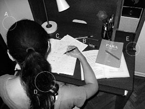

Şu ana kadar hiçbir kız, erkek arkadaşının arabasını açtığında benim dün gece karşılaştığım manzarayla karşılaşmamıştır. Genelde kapıyı açar, yerinize oturur ve onun sizi evinize bırakmasını beklersiniz. Hiç ama hiçbir kız arabayı açtığında bir kuyudan fırlar gibi morarmış bir suratla kendini dışarıya atan bir sevgiliyle karşılaşmaz. Böylesine nadir görülen bir durumla karşılaştığıma göre her ne kadar bundan bir zevk almayacaksam da bu olayın üzerimdeki etkisini yazmalıyım.
Arabaya geldiğimde kapının üzerindeki anahtar hiç ilgimi çekmemişti. Ersin anahtarı kapının üzerinde unuttu sanmıştım. Anahtarı çevirip kapıyı açtım. Bundan sonrasını anlatabilmek için ders kitaplarındaki maddeleme yönteminden yardım alacağım (Bir işimize yarasın değil mi?). Arabanın kapısını açıp Ersin'e "Geldim, n'aber" diye seslendikten sonra yaşadığım üç saniyeyi üç aşamaya böldüm:
1. Saniye: Ani bir hareketle gelen korku: Kapıdan dışarı fırlayan sevgilimden korktum çünkü bu fazlasıyla beklenmedik bir olaydı. Geriye doğru sıçradığımı hatırlıyorum.
2. Saniye: Yanlış anlama sonucunda cinsel uyarılma: Onun beni beklediği süre içinde azdığını ve benimle asfalt üzerinde sevişeceğini düşündüm. Beton Dünya insanları için mükemmel bir fantezi.
3. Saniye: Morarmış suratını gördüğüm anda gelen korku: Suratı morarmıştı. Basbayağı mor rengi. Geçen sene okuduğumuz Kamusal Maliye kitabının kapağı gibi yani. İlk düşündüğüm şey dayak yemiş olduğuydu. Gözüne yediği bir yumruk buna neden olmuş olabilirdi. Derken Ersin'in hızla nefes aldığını gördüm. Yüzündeki morarmanın havasız kalmaktan kaynaklandığını anladım. Bu beni ilk ihtimalden daha çok korkuttu.
Sevgilim yere çömeldi ve büyük bir iştahla nefes almaya başladı. Finiş çizgisini geçen uzun mesafe koşucularına benziyordu. Her halinden ölümden dönmüş bir insan olduğu anlaşılan Ersin'i izlerken benzetme yaptığım için beni acımasızlıkla suçlamayın. Olayların tuhaflığını bastırıp onların gerçekliğini benimsememin tek yolu, başından beri hayal gücünün gerçekçi bir biçimde anlatılmasına hizmet eden teşbih sanatından geçiyor.
Sanırım üç dakika boyunca Ersin orada aynı pozisyonda sürekli nefes aldı. Konuşmamak, soru sormamak gerekiyordu, ben de öyle yaptım. Sesimi çıkarmadan orada ayakta durdum. Sonra Ersin ayağa kalktı. Nefes alması normale dönmüştü. Hiçbir şey olmamış gibi kapının diğer tarafındaki anahtarı aldı. Kapının üzerindeki anahtar ile Ersin'in mor suratı gerçeklerini yan yana koyunca sevgilimin gaddar bir plan sonucu içeride hapis kaldığını anladım. Ama bu her şeyi açıklamaya yetmiyordu. Küçükken okuduğum bir haber aklıma geldi: Karısının evden kovduğu bir adam arabasında uyumaya karar vermiş ve sabah ölü bulunmuştu. Arabanın penceresini en azından bir parmak açık bırakmış olsa hayata devam edebilirdi. Yine de bu aynı şey değildi. Ersin arabanın içinde en fazla 30 dakika kalmış olabilirdi. Hayaletin oyunu çok da uzun sürmemişti. Ve bir arabanın içindeki hava bu kadar kısa sürede bitemezdi.
Arabanın içinde çıt çıkmıyordu. Ersin'in ne kadar sinirli olduğu direksiyonu sımsıkı tutuşundan belli oluyordu. Sessizlik bozulmalıydı. Olayların gelişmesi benim bir soru sormamı gerektiriyordu ama soru ondan geldi:
"Neredeydin?"
İyi bir yalan söylemek için bir numaralı altın kural, söylediğinize önce kendinizin inanması gerektiğidir. Bu başlangıçta insana zor gelir, bir yalanla hem karşınızdakini hem de kendinizi kandırmanız zaten zor bir olaydır ama yaşınız ilerledikçe ve yalan söylemeye daha çok ihtiyaç duydukça bu iş bir alışkanlığa dönüşür. Artık iki hayatınız vardır: biri uydurduğunuz hayat, diğeri gerçek hayatınız. Gerçek hayatınız çok geçmeden sizden habersiz ilerlemeye başlar. Uyduruk hayatınız her yalanla beraber güç kazanır ve kontrolünüzden çıkar. Artık hangisinin sizin gerçek hayatınız olduğunu bilemezsiniz. Bir şeyi rüyada mı yoksa hayatta mı yaptığını bilememeye benzer bu. Ne günah olduğundan ne de vicdanımda yarattığı rahatsızlıktan, yalan söylemekten en çok bu yüzden nefret ederim. Ama bazı durumlar var ki yalan en büyük kurtarıcınız oluyor, benim o anda bulunduğum durum gibi.
Neyse, tabii tüm bunları Ersin'in benden "Neredeydin?" sorusuna yanıtımı beklerken düşünmedim. Ersin'in sorusundan sonra ne diyeceğimi bilmiyordum ama yarım yamalak bir Türkçeyle şuna benzer bir şeyler uydurmayı başardım:
"Kapının önünde seni bekliyordum. Sanırım kulisten bir şey çalınmış. Etraftaki herkesi topladılar, polisler tabii, bir polis minibüsü geldi bu arada, sonra ayaküstü sorguladılar. Tam durduğum yerin 2 metre arkasında kulise giden bir kapı varmış meğer ve bana sürekli soru sordular, burada daha önce 3 defa hırsızlık vakası olmuş, geçen sefer Demet Akbağ'ın cep telefonunu ve kredi kartlarını çalmışlar..."
Oyunculuk ruhum kabarmıştı. Durmak bilmeden konuşuyordum. Durmak bilmeden yalan söylüyordum. İnandırıcı olduğumu sanıyordum çünkü neredeyse biraz önce yazdığım yalancılık safhasında olduğu gibi kendime inanacak ve hayaletin oynadığı tiyatro oyununu hepten unutacaktım. Ama Ersin "Kes!" diye bağırınca düşündüğüm kadar iyi oynamadığımı anladım. Erkeklerin kavga esnasında çıkardığı sese katlanabilmek çok zor. Kızlarınki en azından klasik deyişle cadı gibi çıkar, erkeklerinki ise tam bir hayvan gibi çıkıyor:
"Tuhaf bir şeyler dönüyor. Ve sen bunu biliyorsun. Dün sikim pişti, bugün ise boğuluyordum! Arabanın içinde kilitli kaldım, bir de tüm bunların üstüne arabanın içindeki oksijenin nedense dışarı çıkası geldi! Hepsinden daha da düşündürücü olan; senin arabaya bu süre içinde uğramaman, hatta uzaktan bakma zahmetine bile katlanmaman! Şimdi de bu hırsızlık palavrasını atıyorsun. Hiçbir anlam veremiyorum. Tekrar soruyorum, neredeydin ve neden gelmedin?"
El ele tutuşarak yürümek, sohbet etmek, gülmek, eğlenmek, öpüşmek, onun sizi –varolmayan düşmanlardan– koruması ya da en azından koruyor gibi yapması, sevişmek, onun evinizden sizi alıp başka bir yere bırakması, başka yerden evinize geri bırakması, size hediyeler alması, sinema biletinizi ısmarlaması, yemek ısmarlaması vesaire vesaire... Bunlar başka bir insanla ilişkiye girmenin güzel yanları. Ya da yalnızlığınızı ve özgürlüğünüzü bozmaya değen şeyler, diyelim bunlara. Bir de şu kavgalar var. Hepsini toplasanız incir çekirdeğini doldurmayacak şeyler yüzünden saatlerce kavga etmeler, telefon ahizesini çarpmalar, bağrış çığrış. İnanır mısınız, bence bunlar da güzel. Başkalarından farklı olduğunuza inandığınız, filmlerde birbirlerinin üzerine tabaklar fırlatan karı kocalar gibi birbirinize girdiğiniz, sonucunda kimsenin kazanamadığı karşılıklı kükreme müsabakaları. Ama bu son yaşadığımız öyle bir şey değildi. Eğer sevgiliniz arabada boğulurken siz bir hayaletin tiyatro oyununu izliyorsanız, ne yalan uydurursanız uydurun, incir çekirdeği dolmuş, taşmıştır ve berbat bir kavga başlamıştır. Bir an evvel bitmesini istediğiniz, bittikten sonra hatırlamamak için beyninizden ameliyatla çıkarmayı göze alabileceğiniz türden bir hatıra diye buna denir!
"Dedim ya... Orada bir kargaşa oldu. Gelemedim. Bırakmadılar beni. Polislerden korkarım ben, biliyorsun (acındırma yöntemi). Ne yapacakları belli olmaz. Televizyonlarda görüyoruz. Senin merakını gidermek uğruna arabaya gelsem kafama bir cop inebilirdi. Arabada tıkalı kaldığını bilemezdim herhalde" dedim. O, bağırmaya devam ediyordu:
"Ben bir şey görmedim. Bir şey duymadım. Gelen giden bir polis minibüsü... Veya bir kalabalık... Ne bileyim, telaş nedeniyle oluşan bir gürültü de duymadım... Hiç kimseyi görmedim. Buradan da o merdivenin olduğu yer görülüyor! Artık yalanı kes! Anladın mı?" dedi, arada bir sağ elini direksiyona vuruyordu. Sol elini finallere saklıyor olmalıydı.
Hava elektriklenmişti veya gerilmişti gibi deyimler vardır ya, bu ikisinin de o an için gerçek olduğuna parmağımı basabilirim. Havadaki elektriği hissediyordum. Hatta bir yere dokunursam ufak da olsa bir elektrik şokuna uğrayacağımı düşünerek hiç kımıldamadım. Ve havanın gerginliğini de hissedebiliyordum. Sanki hava gerçekten gerilmiş ve naylon bir poşet gibi üstümü sarmıştı. Kımıldamayı denemedim, zaten hareket edebileceğimi sanmıyordum, konuşmakta bile zorluk çekiyordum ama biraz heceleyerek de olsa konuştum: "Bak tamam, biraz abartmış olabilirim ama sonuçta orada arabaya gelmeme olanak tanımayacak karışık bir durum vardı. Bileğimi burkmuştum. Bunu anlamalısın. Daha da önemlisi bana güvenmelisin. Başka bir açıklamam yok. Olanlar için üzgünüm. Ama kimse böyle bir şeyin gerçekleşeceğini tahmin edemezdi" dedim. Ve sanırım amacına ulaşan bir konuşma oldu. Ersin tartışmanın kapanış cümlelerini söyledi ve beni evime bırakmak üzere kontak anahtarını çevirdi:
"Tamam, ama bu konunun peşini bırakacağımı sanma, şimdilik erteliyorum bu tartışmayı. Çünkü yeterince vakit kaybettim. Ders çalışmam için gereken en son şey buydu."
Yol boyunca hiç konuşmadık.
Apartmanın önünde durduk, birbirimize "İyi geceler" dedik ve ayrıldık. Eve geldim, odama girdim, pijamalarımı giydim ve yatmadan önce günlüğüme sarıldım.
Şimdi tek isteğim uyumak. Ölüler gibi uyumak. Rüyasız, kâbussuz, dipsiz bir uyku. En azından bir yedi saatliğine ölmek ve her şeyi unutmak.
Şimdi iki kaşık pasiflora içeceğim ve uyuyacağım. Yarın görüşürüz günlük.
Sabah kalktım ve iki tuvaleti de dolu buldum. Babamın da kardeşimin de işleri uzun. Ve doğduğum günden beri, onların uzunlarının gerçekten uzun sürmesinin hem şahidi hem de kurbanıyım. Sanki erkek milleti ayakta işemenin intikamını, hacet giderirken gazete okuyarak ve gamewatch oynayarak çıkartıyor.
Gazetenin asıl kısmı tuvalette, Pazar eki ise annemin ellerinde mutfakta rehin kalınca bana da boş boş oturmak düştü. Hazır oturmuşken bir şeyler yazayım dedim. Aha, işte o tek kişilik tuvalet bekleme kuyruğunda yazdıklarım bunlar oluyor. Bu yazma olayına fena kaptırdım galiba... O ses de ne? Kardeşimin oyunu ve bağırsaklarındaki malzeme game over oldu galiba, kapı sesi duydum... Tüh! Yanlış alarmmış, annemden tuvalet kâğıdı istiyor kerata. Neyse, tüm bu seremoniler tamamlansın da bir an evvel ders çalışmaya başlayayım. Elimin kondisyonunu gereksiz günlük yazılarıyla harcamanın lüzumu yok. Özet çıkarmak için yaratıldı bu eller. Heyt be!"
Güldem'in odasına çay vermek için giren annesi de, kızının bir kere olsun salona gelip televizyon molası vermediğinin ayrımındaki babası da, maket malzemelerini almak için ansızın ablasının odasına giren ama sessizlikten korkarak malzemelerin bir kısmını unutarak çıkan kardeşi de onun harıl harıl ders çalıştığını sanıyorlardı. Önünde muntazam bir şekille açılı duran kitapları ve defterleri, sağ köşede duran saati ve elindeki kalem ile öyle bir izlenim yaratıyordu ki tanrı bile onun çalıştığına kanaat getirebilirdi. Oysa Güldem şu an ders çalışmıyordu! Bu sahnenin bir fotoğrafını çekelim. Diyaframı açalım ki daha aydınlık bir fotoğraf olsun, amacımız sanatsal bir fotoğraf çekmek değil, ayrıntıları görebilmek. Ve bu fotoğrafa dikkatlice bakalım.

Onun ders çalışmadığını nasıl anlayabiliriz?
A) Kafasının baktığı açının defter veya kitaplardan uzağa denk gelmesinden
B) Elindeki kalemi tutuşundan
C) Kitabın açık duran sayfasındaki konu ile defterdeki konunun ilgisizliğinden
D) Saçlarının düzgünlüğünden
E) Masanın köşesinde duran kol saatinden
Önce teker teker seçenekleri gözden geçirelim. A seçeneğini hemen eleyebiliriz. Gözler her zaman yanıltır, özellikle sınav dönemlerinde daha çok yanıltır. B seçeneğini de eleyebiliriz, çalışan insan kalemiyle oynama hakkına sahiptir. C seçeneği iddialı bir seçenek gibi gözüküyor ama o da doğru yanıt değil. İki alakasız konuya aynı anda bakılabilir, bir insan gelecekte hiçbir işine yaramayacak bir dersin içine gerçekten gömülmüşse mantık dışı hareketlerde pekâlâ bulunabilir. C'yi de eledik, oysa gözümüze ilk o çarpmıştı. Bu tip (önce banko dediğimiz sonra ise gözümüzü kırpmadan elediğimiz) seçenekleri elerken o seçeneğe çok kısa bir süre olsa da acırız, sanki onu öldürmüşüz gibi vicdan azabı çekeriz. Neyse... D seçeneğinde saçlar mevzubahis. Elbette saçlar önemli, çalışan insanın saçları genelde düzgün olmaz. Ama Güldem'in saçlarının düzgünlüğü "Çalışıyor ama henüz saçını başını yolma aşamasına gelmemiş" anlamına da gelebilir. D'yi de böylece eleriz. Evet, geriye bir tek seçenek kaldı ve doğru olan da o: E. Oysa pek bir gariban duruşu vardır E'nin. "Masanın köşesinde duran kol saatinden." Eee, ne var bunda? Fotoğrafa dikkatlice bakalım. Kol saati masanın en köşesine doğru itilmiş. Bir kısmının havada durduğu bile söylenebilir. Adeta, üfleseniz düşecek durumda. Bunun anlamı şu: Kafanıza kitaptaki cümleler girmediği zaman, normal zamanlarda duyamayacağınız saniye okunun tıkırtısını duyarsınız ve bu zamanla bir işkenceye dönüşür. Fotoğraftan görüldüğü gibi Güldem çalışamadığı için kol saatinin tıkırtısına maruz kalmış ve o sesten kurtulmak için saati uzağa yerleştirmiş. Çalışamadığına dair ilk kanıtımız bu. Fotoğrafta Güldem'in dersine konsantre olmadığını gösteren bir gerçek daha var. Güldem kol saatini uzaklaştırmış ama onu hepten uzaklaştırmamış, saat hâlâ görüş menzilinde. Bunun açıklaması şöyle: Kol saatini mümkün olduğunca uzağa koyarsınız ama odanın ücra bir köşesine de koyamazsınız çünkü aynı zamanda ona ihtiyacınız vardır. Elinizin altında olmalı ki çalışmanızı planlı programlı bir şekilde yürütebilesiniz. Demek ki Güldem çalışamadığı için kol saatinin tıkırtısını duymaya başlamış ve onu uzağa yerleştirmiş ama istediği zaman ulaşabileceği bir yere yerleştirmekten de geri kalmamış. Yani kafasını derse vermemiş, programlı bir çalışma içinde değil, halen saate bakıp programını değiştirme şansı var. Tam bir çelişki içinde. Ve E seçeneğini daha da kuvvetlendirecek bir diğer ayrıntı: Saat, Güldem'in oturma pozisyonuna göre göremeyeceği bir yerde mevzilenmiş çünkü Güldem saati görürse moralinin bozulacağını biliyor. Çağdaş ve hızlı yaşanan çağımızın en basit hareketlerinden biri olan saate bakmak, sınav dönemlerinde korkulu anlara dönüşür. Bir öğrencinin saati, sınav dönemlerinde geriye doğru işler. Dijital olsun, eski model olsun, en şıkından Swatch olsun, en fonksiyonelinden Casio olsun hiç fark etmez, tüm saatler hızla akan kumlarla dolu acımasız kum saatlerine dönüşür.
Eğer Güldem sağ tarafına dönseydi ve gözü masanın köşesine doğru kaysaydı, saatin 19.30'u gösterdiğini görürdü. Annesi akşam yemeği için onu çağırınca saatine bakmasına gerek kalmadı. Annesi akşam yemeği için çığırtkanlığını 19.00'dan sonra yapardı her zaman. Bu bir kâbus olmalı! Değildi. Aslında hiç çalışmadığını söylemek yanlış olurdu ama şimdi sınava girse ve tüm sorular okuduğu tek bölümden gelse bile 50'nin üzerinde alamazdı. Akşam yemeği, öncesi ve sonrasıyla kafadan bir saati alırdı. Geriye en fazla üç saat kalırdı. Brüt iki buçuk saat diyelim buna. İki buçuk saatte önündeki kitabın dörtte biri bile bitmezdi.
Hepsi benim suçum, bir iki saat önce hayaleti suçladığımı biliyorum ama kendimi kandırıyordum, hayaletin ne fikri ne kendisi ne de dün yaptığı şov aklıma geldi. Hepsini günlüğüme yazdım ve yazdığım her şey orada (burada) kaldı. Sihir gibi. Ersin'le yaptığımız yüzyılın en iğrenç kavgası da aklıma gelmedi. Tek suçlu benim. Hayır, esasında ortada suç falan yok. Sadece bu kitaptaki fuzuli ve kötü Türkçeyle yazılmış bilgileri beynime sokmak istemiyorum. Hepsi bu. Çalışmayı reddediyorum. Şimdi yemek yiyeceğim ve sonra da Tatlı Kaçıklar'ı izleyeceğim. Ardından yatacağım. Hiç pişmanlık duymadan uyuyacağım.
Çok iddialı oldu sanırım. Bunu yapabilir miyim? Yapabilirim tabii. Herkes yapabilir. Tembellik doğuştan gelir, çalışmak sonradan edindiğimiz kötü alışkanlıklardan biridir. İnsan zekâyla ve tembellikle dünyaya gelir. Sonra yitirir onları. Tüm sınavları boş vermek ve ölümüne televizyon izlemek... Kulağa hiç fena gelmiyor.
Karşıyaka-Buca, Fahrettin Altay-Buca, Bornova-Buca, Balçova-Buca, Konak-Buca, kısacası Dokuz Eylül Üniversitesi İktisadi Bilimler Fakültesi'ne giden tüm otobüslerin son durağı üniversitenin arka kapısının hemen önündeydi. Üniversitenin otoparkı burada bulunduğundan ve fakülte derslerinin yapıldığı binalar buraya daha yakın olduğundan bu kapı daha çok kullanılırdı ama bu kapının üzerinde üniversitenin herhangi bir işareti olmadığı için buraya pekâlâ arka kapı diyebilirdik. Üniversiteden eve gidenlerin otobüslerinin geçtiği otobüs durağı ile evden üniversiteye gelenlerin durağı karşı karşıyaydı. Evden üniversiteye gelenlerin durağının hemen arkasında sıra sıra fotokopi dükkânları diziliydi. Yan sokağa taşan fotokopi dükkânları toplam on üç taneydi. Her dükkânda en az iki tane fotokopi makinesi vardı ve bu makineler özellikle sınav arifelerinde durmaksızın çalışırdı. Sınavlardan önce fotokopi dükkânları sınıflardan daha kalabalık olurdu. Duraklar, fotokopiciler, otopark ve üniversite kapısı arasında kalan bu yol özellikle sınav dönemlerinde bir müzik festivalinin ana giriş kapısını andırırdı.
İki otobüsün yan yana geçmekte zorlandığı bu dar yolu sadece arabalar, kamyonlar ve otobüsler kullansa sorun olmazdı ama bu yolu insanlar da kullanıyordu. Böylece burası sınav dönemlerinde bir ölüm tuzağına dönüşüyordu. Kimsenin bu tuzağa yakalanmamış olması onun tuzak olmadığı anlamına gelmezdi. (Gerçi bir defasında bir kıza bir kamyonet çarpmıştı ama kaza ufak sıyrıklarla atlatılmıştı.) "Korkunun fotoğrafını çekmek için ideal bir yer" diye düşündü Güldem otobüsten inerken. Gökalp'in intihar mektubundaki tabirdi bu.
Dünyada ilk kez bir üniversite kapısından sadece bir adım ötede Azrail'in en sadık hizmetkârları olan motorlu araçlar cirit atıyordu. Dünyada sadece bu üniversite kapısından öğrenciler diklemesine değil üniversitenin duvarlarına sürtünerek yanlamasına çıkıyordu. Dokuz Eylül Üniversitesi'nden eve veya yurtlarına dönen öğrenciler sadece üniversiteden değil, ölümden de dönüyordu. Dalgınlığa düşen bir öğrencinin kapıdan düz bir rotada çıkması onun ölümüne neden olabilirdi. O öldükten sonra üniversite idarecileri yolun üzerine bir hız tümseği koymayı akıl edebilirler, bir kişi daha öldükten sonra durakların yerini değiştirmek için belediyeye danışmayı düşünebilirlerdi. Ama nereden bilebilirlerdi ki, onlar arabalarıyla doğrudan üniversiteye girerlerdi ve o yolu sadece bir saniyeliğine görürlerdi. Onların suçu değildi. Yolun tehlikesi konusunda uyaran dilekçelerin önemini bu yüzden anlamayıp tozlu raflara bırakmışlardı. Onlar ancak ölülerle akıllanırlardı. Bir kaşık kızılcık reçelinin zihin açması gibi bir kaşık ölü, onların aklını başına getirirdi.
Güldem otobüsten indi. Bu yerden nefret ediyordu: Duraklar, fotokopiciler, otopark ve üniversite kapısı. Bir anda buraya Buca Şeytan Dörtgeni demeye karar verdi. Pek sevdi bu tanımı. Hayal gücü sabah sabah iyi egzersiz yapmıştı. Kalabalıkla beraber karşıya geçti. Sosyal Piyasa Ekonomisi sınavına günlüğünde söz verdiği gibi hiç çalışmamıştı ve hiç pişmanlık duymuyordu. Sınavın yapılacağı A amfilerinin önünde Ersin, Şebnem, Murat, Ceyda ve Burak'la buluşacak ve onların anlattıklarına biraz kulak verip sınava girecekti. A amfilerinin önünde beklenen kadroyu gördü ve aralarına daldı. Teker teker hepsiyle yanaktan öpüştü. Ersin'le Güldem arasındaki gerilim hissediliyordu. Ersin o gerilimden çıkıp elindeki ders kitabındaki bilgileri aklına kazımak istiyordu. Bunu başaramayınca ortaya bir soru sordu ve her kafadan başka bir ses çıktı. Ersin'in kafası iyice karıştı.
Saat 13.00 olunca sınıflara girdiler ve yerlerine oturdular. 15 dakika içinde asistanlar ve hocalar sınıflara girip sınav kâğıtlarını dağıtacaklardı. Öğrencilerin yüzlerinde gözle görülür yoğun bir endişe okunuyordu. Bazıları kendilerine güveniyor gibiydi, ne de olsa kitabı üç defa okudum, diye düşünüyorlardı. Üç defa tekrarın, başarının sigortası olduğunu sanıyorlardı.
Güldem arkadaşlarına göz gezdirdi. Deliler gibi çalışıyorlardı. Deliler... Deliler çalışmazdı ki. Tembelliğin patavatsız krallarıydı onlar. Şebnem'e baktı. Yine günündeydi. Sınıfın en güzeli değil ama kesinlikle en seksisi. Dar kazağı kadın vücudunun en önemli iki kozunu ustalıkla ortaya çıkarıyordu. Sınıfın arkasında kopya tezgâhı kurmakta olan iki öğrenci, Şebnem'e ve Şebnem'in göğüslerine bakarak muhabbet ediyordu.
"Bir kere dokunmak için yirmi milyon veririm."
"Deli misin, ben sadece görmek için verebilirim o parayı."
"Hadi len!"
Sınav başladığı anda tüm kafalar tavus kuşları gibi sınav kâğıtlarına gömüldü. Sadece Güldem pek ilgileniyor gibi gözükmüyordu. Önündeki sınavla ilgili olan tüm endişesini, tüm merakını, tüm kuruntusunu ve korkusunu atalı çok olmuştu. Tembellik kuramını hiçbir felsefeye oturtmaya gerek duymamıştı. Tembelliğinin gelecekteki kötü sonuçlarını düşleyerek kafasını boşu boşuna yormadı. Sadece, o an için istediği şeyi yapacaktı. Sosyal Piyasa Ekonomisi sorularına hak ettiği saygıdan çok daha fazlasını gösteren öğrencilere baktı ve acıdı onlara. Sınav kâğıdına baktı ama okumadı. Bilgisayar çağında hâlâ nasıl oluyor da daktilo kullanıyorlar diye düşündü. Elbette daktilonun bir ruhu vardı ve bu önemli bir şeydi ama –hataları düzeltmek için– XXXX'lerle karalanmış bir sınav kâğıdını buna mecbur olanlar dışında kimse okumak istemezdi. Bazı Türkçe hatalarının olduğundan da emindi. Sınav kâğıdını okumaya karar verdi ama yanıtlamak için değil sadece kontrol etmek için. Bir soruda kelimeden ayrı yazılması gereken "dahi" anlamındaki "da" kelimesi bitişik yazılmıştı. Araya bir çizgi çekti. Türkçe'nin VJ'ler tarafından bozulmasını ele alan bir gazete başlığı aklına geldi: "Türkçeyide Bozdular". Öğretmenlerin, Türkçe için VJ'lerden daha büyük bir tehlike olduğunu düşündü.
Güldem devam etti kontrolüne. Üç tane daha yazım hatası vardı. İki tane de devrik cümle. Onları da dikkatle düzeltti. Sanki o sınav kâğıdı önüne yanıtlanması için değil de redaksiyonunu yapılsın diye konmuştu. Beş dakikada sınav kâğıdının redaksiyonunu bitirdi ve öylece bıraktı kâğıdı. Asistan çıkmak isteyen bir öğrenciye "On beş dakika sonra çıkabilirsiniz" deyince Güldem'in üzerine bir sıkıntı bulutu çöküverdi. Beş dakikayı bu bulutla boğuşarak geçirdi. Şeffaf camı havadan ayıramadığı için sürekli cama çarparak dışarı çıkmak isteyen bir sinek gibi çıldırmak üzereydi. Kafasını bir şeylerle meşgul etmek zorundaydı yoksa soyut cama çarparak paramparça olacaktı. Önce, daha da ileri giderek sınav kâğıdına yeni sorular eklemeyi düşündü:
1- Bu sınav kâğıdındaki herhangi bir soruya vereceğim yanıt, benim gerçekten Sosyal Piyasa Ekonomisi'ni ne kadar anladığımı saptamanızda size nasıl yardımcı olacak?
2- Üçüncü soruyu bulmak için cımbız kullandınız mı?
Vazgeçti. Çekindiğinden değil, uğraşmak istemediği için. Sonra çok garip bir şey oldu. Soruların saçmalığı hakkında düşünürken yanıtlar şimşek gibi çaktı beyninde. Bir çizgi film karakteri olsaydı, kafasının üstünde ampul yanardı. İşin tuhaf yanı, o ampulü yakmaya uğraşmamıştı bile. Soruların yanıtları umurunda bile değildi. Ama işte bir anda aklının bir köşesinde, sadece "Geriye ne kadar kaldı" diyerek çevirdiği Sosyal Piyasa Ekonomisi'nin sayfaları açılıvermişti. Bir vahiy gelmişti adeta. Tüm soruların yanıtlarını görebiliyordu. Sınav başlarken kâğıdı boş bırakmaya kararlı görünse de vahiy geldikten sonra "Neden olmasın, en azından on dakika geçer" diye düşündü ve sınav kâğıdının yanındaki görünmez bir kitaptan kopya çeker gibi soruların altındaki boşlukları doldurdu. On dakikada bitirdi. Diğer öğrenciler gibi atmasyonla doldurmasına gerek yoktu, yanıt için ayrılan boşlukları hocasının ısrarla söylediği gibi ortalama üç cümleyle doldurdu ve dışarı çıktı.
Arkadaşları onun sınıfı terk etmesinden yirmi dakika sonra çıktılar. Ve her zamanki sınav sonrası muhabbeti çok geçmeden başladı.
"Nasıl geçti" dedi Ersin. Diğerleri de gözlerini Güldem'e yöneltti.
"Kesin 100" dedi Güldem ve güldü.
"Hadi ya, hani hiç çalışmamıştın!"
"Bildiğim yerlerden çıktı" dedi ve çakırkeyif bir gülücük dudaklarında açtı.
Besbelli herkesin berbat geçmişti. İçlerinde sınava en az çalışan kişinin gülümsüyor olması hepsinin sinirini bozuyordu ama belli etmediler.
Ersin "İlk soruya ne yanıt verdin?" dedi.
Güldem kendinden emin "Hatırlamıyorum" dedi ve ekledi: "Ama emindim."
Ersin'in delirmesi içten bile değildi. Köpek gibi çalıştığını, kitabı yalayıp yuttuğunu düşünüyordu. Sınavdan önce kendisine sorulan soruları da eksiksiz yanıtlamıştı. Ama bu kız benden daha iyi yapıyor. Benim iki günde ezberlediğim şeyi ilk bakışta aklında tutabiliyor. Biz erkekler, kızların ezber gücüne hiçbir zaman erişemeyeceğiz herhalde. Olsun, onlar da bizim aklımıza erişemeyecekler. Şimdilik geride gibi gözüksek de yakın bir zamanda fark atmış olacağız. Ersin cumartesi gecesi yaşadığı olayı tamamen unutmuş görünüyordu. Üstelik o gece takındığı haklı paranoya hali de yoktu ve şimdi olayın gizemini bir kumpastan daha çok, üst üste gelen kötü tesadüflerle açıklıyordu. Bu yumuşamasının ardında, sınav haftasında takınılması farz olan "normal psikoloji" de önemli bir faktördü. Sınav haftasına girdiğini haberleyen tabelayı görmüştü. Üzerinde "düşünen adam"ın "çalışan adam" versiyonu vardı. Bir sonraki tabela "park edilmez"e benziyordu. Bunun anlamı şuydu: "Sınav haftasına giriyorsunuz, Paranoya yasak."
Şebnem, Murat, Güldem, Ersin, Burak ve Ceyda'dan oluşan grup dekanlık binası ile D binası arasındaki dev vazonun etrafındaki mini havuzun kenarlıklarında oturarak sınav sonrası yorgunluk atıyordu. Bu sırada onlara doğru yeni bir karakter yaklaşıyordu. Karakterin adı Lütfü'ydü. Tombulca bir tipti. Alnı kocamandı ve saçları yirmi bir yaşındaki biri için epey seyrekti. O da diğerleriyle aynı sınıftaydı ama son sene derslere girmiyordu. Borsaya merak salmıştı. Hükümet kaosu, Azerbeycan'daki darbe olasılığı ve Fenerbahçe başkanı seçimleri yüzünden borsada hareketli günler yaşanıyordu, o da tüyolardan geri kalmamak için bütün gün menkul kıymetler şirketleri arasında mekik dokuyordu. Aslında borsaya uzun zamandır meraklıydı. Çocukluğunda bile çizgi film izlemek yerine ekranın altından geçen borsa bantlarını okuduğunu söyler ve sanki bu özelliğiyle övünürdü. Şu ana kadar bunu anlattığı hiç kimse, o zamanlar ekranın altından geçen borsa bantlarının olup olmadığını düşünmemişti. Burak'taki yetenek Lütfü'de de vardı: karşısındaki insanın davranışlarını, tepkilerini, ruh halini istediği gibi yönlendirebilme yeteneği. Esprileri genelde kötüydü ama bu yeteneği sayesinde insanları güldürebiliyordu. Espriden anlayan, hiç değilse arada bir Leman'a göz atan biri ona –ona ve ona gülenlere– sadece acıyabilirdi. Bir kere eğlence olsun diye birbirlerine edebiyat akımlarını yakıştırmışlardı ve herkes Lütfü'ye realizmi uygun bulmuştu. Lütfü ise "Realizm hangisiydi?" demişti. Hafta sonları eğer aralarında Lütfü varsa, sinemaya gitme projeleri suya düşerdi. Eğer giderlerse Lütfü'nün, filmi sabote etmek için elinden gelen her şeyi yapacağını bilirlerdi. Buna karşın, popüler olmasını ve en güzel kızlarla çıkabilmesini satış uzmanı olmasına borçluydu. Sadece hisse senetlerini değil, kendisini satmada da becerikliydi. Son derece gereksiz ama gelecekte işe yarayacak tüm bilgileri bilirdi ve bu özelliğini ön plana çıkarırdı. Babaların bildiği türden bilgiler. Mesela arabayı yanlışlıkla çarpınca Kasko'dan parayı almak için yapılacak olan işlemler. Ya da hangi hastalığa hangi ilacın iyi geleceği, hangi semtteki apartman dairelerinin kaça kiralandığı, ideal bir CV'de yazılması gerekenler, bürokratik işlemleri kısa yoldan halletmenin yolları... Bunun gibi yaşından büyük bilgilere sahipti ve böylece kızların gözünde ideal aile reisi portresi çizebiliyordu. Tüm bu özelliklerinin ötesinde; o, para kazanan biriydi. Ve üniversitede kızlar tarafından çekici bulunmanız ve çevre yapmanız için bu sebep yeter de artardı. Lütfü'nün doğaüstü gücü ise şimşekleri kontrol edebilmesiydi. Eğer insanoğlu doğaüstü güçlerinin farkına varabilecek akıl seviyesine ulaşsaydı, Lütfü şimşek atabilen bir süper kahraman veya süper bir düşman olabilirdi. Şimdi ise sadece bir borsa uzmanıydı.
"Ooo, Lütfü baba, teşrif ettiniz sonunda" diyerek karşıladı Ersin borsa uzmanı arkadaşını.
"Sınava geldim. Hemen gitmem lazım. Seansın sonuçlarını alacağım" dedi ve güldü. Çok bilmiş bir gülümseme.
"Kopmuşsun ya. Bir ara bize de öğret."
"Bakarız" dedi ve sinsi sinsi güldü."
"Hepsi kumar" diyerek atıldı Güldem muhabbete.
Bir anda topluluğun arasında soğuk bir hava esti. Soğukluğun tek nedeni Güldem'in ani çıkışı değildi ama henüz onlar soğukluğun ikinci sebebini öğrenmeye hazır değildiler.
Gözler Güldem'e döndü. Lütfü'ye bakarken gülümseyen gözler, Güldem'e dönerken kutsal kitaplarına küfreden birine bakan din adamının gözlerindeki anlamı kazandı.
"Ne?" dedi Lütfü.
"Hepsi kumar. Borsa kumardır. Altılı ganyandan farkı yok. Hayır, aslında var. Altılı ganyan bir spor. Jokeyler, atlar, egzersizler, yarış. Stratejileri, teknikleri ve bir estetiği var. Hepsinden önemlisi insani. Borsada sayılar koşturur."
"Borsa bir kumarsa, ben bir kumarbaz mıyım?"
"Evet, dedi Güldem hiç tereddüt etmeden."
Topluluk, ordunun darbe ilan etmesiyle dumura uğrayan palyaçolar gibi, bir anda ortaya çıkan stresli ortama adapte olamamıştı. Sadece Burak her zaman yaptığı gibi çenesi öne doğru açılmış hırlayan sırıtışını icra etti ama kimsenin gülmediğini fark edince ciddi görünmeye çabaladı. Hiçbiri kimin tarafını tutacağını bilemiyordu. En zor seçim de Ersin'inkiydi. Bir yanda samimi dostu, diğer yanda her şeye karşın çok sevdiği kız arkadaşı. Bir yanda iki aydır biriktirdiği parayı nereye yatırması gerektiğini sormak için zaman kolladığı güvenilir bir arkadaşı, bir yanda seviştiği kız. Sınav haftasında böyle bir gerilim iyi olmazdı, bunu bozmak için Güldem'in tarafını tuttu. Lütfü'nün gönlünü almak, Güldem'in gönlünü almaktan çok daha kolay olurdu.
"Neyse, biz gidelim" dedi Ersin Güldem'e.
Ersin Güldem'le beraber otoparka doğru yürürken Lütfü'ye döndü ve Güldem'e fark ettirmeden "Boş ver" anlamında el, kafa ve göz kombinasyonlu spastik bir hareket yaptı. Mesaj yerine ulaştı ve Lütfü de ona "Tamamdır, önemli değil" anlamında göz kırptı.
Güldem'le Ersin arasındaki soğuk hava beklenenden önce, Ersin'in sayesinde ısınmıştı. Arabaya bindiler, yola koyuldular. Ersin, her kırmızı ışıkta Güldem'e bakıyor ve içinden onun güzelliği hakkında şairane tanımlamalar yapıyordu. "Şu ana kadar çıktığım en güzel kız" gibi. Sınav dönemlerinde kızlar olağandan daha güzel görünür. Erkekler ise tam tersi, sınav dönemlerinde çalışırken sakalı kaşımanın sinematografik keyfi yüzünden sakal uzatırlar. Sakallarla beraber, tırnaklar, saçlar da uzar, stres nedeniyle sivilceler çıkar, banyoyla vakit kaybetmemek için ter kokuları artar, saçlar daha bir özensiz taranır. Kendinizi çirkin hissettiğiniz zaman güzellikler daha çok ilginizi çeker. Kızların güzelliğinin, erkeklerin sınav performansını olumsuz yönde etkilediği ve bu etkinin 100 üzerinden notlanan sınavlarda başarıyı ortalama 2 puan düşürdüğü ve bu teoriyi ciddiye alabilecek kadar kaçık bir bilimadamının bunu deneylerle ispatlayarak, 48 alıp sınıfta kalan binlerce erkek öğrenciyi kurtarabileceği gerçeği rahatlıkla (çılgınlıkla) iddia edilebilir. Ersin de benzer bir fanteziyle sınavdaki başarısızlığını Güldem'in güzelliğine yoruyordu. Sanki ona yeniden âşık oluyordu. Aniden yolda bir tabela gördüğünü sandı, daha önce düşlediği o çalışan adam sembolü vardı tabelanın üzerinde. Sonra tabela kendiliğinden değişti. Şimdi üzerinde bir kalp işareti, kalp işaretinin üzerinde de X işareti vardı. Bunun anlamı şuydu: "Dikkat, sınav haftasına giriyorsunuz, aşk yasak."
Ceyda yatağının üzerinde uzanmış Elle dergisine göz atıyordu. Hemen yanı başında Uluslararası İktisat kitabı duruyor ama ona pek bakası gelmiyordu. Çalışma isteğinden bu kadar uzak bir sınav dönemi daha yaşamamıştı. Önünde duran dergideki fotomodellerle kendisini kıyaslıyordu. Onlar kadar uzundu, onlar kadar endamlıydı ama onlar kadar güzel olamayacaktı hiçbir zaman. Bu düşünce onun moralini bozsa da kıyaslamaya devam ediyordu. Aniden üzerinde bir ürperti dolaştı. Uykusu geldiği zamanlarda olduğu gibi yorganına sığınma ihtiyacı duydu. Oysa pek uykusu yoktu. Ruhun en bereketli gıdası olan müziğe sığınmaya karar verdi. Yatağından kalktı ve yeni aldığı Mariah Carey CD'sine elini uzattı. Butterfly albümünün jelatinini açmıştı ama henüz CD'yi hiç çalmamıştı. Diski yerinden çıkardı ve CD çalarına yerleştirdi. Ancak CD çalar, diski okumuyordu, oysa servisten daha yeni gelmişti. Diski çıkardı, yeniden taktı ama CD çalarının göstergesinde yine aynı şey yazıyordu: No disk. Ceyda sabırsızlıkla diski aldı, diskteki anormal soğukluğun nedenini düşünmeden çizik olup olmadığını anlamak için arkasına baktı. Diskin arka yüzünde herhangi bir çizik yoktu. Bu yüzündeki buğulu görüntünün onu çok güzel gösterdiğine daha önce rastlamıştı. Bu defa da öyle oldu. Biraz kendini seyretti. Gülümserken suratının ve dişlerinin nasıl bir uyum gösterdiğini test etti. Sonra aniden diskteki görüntü değişti. Değişim çok hızlı olmuştu. Karşısında bir anda yüz elli yaşında, derisi bir havlu gibi buruşmuş, bir ağacın gövdesi gibi çizik çizik olmuş, çoğu kırılmış ve sararmış dişleriyle gülümseyen bir kadın belirdi. Bir çığlık attı ve diski yere attı. Elleriyle gözlerini kapattı. Sonra indirdi. Allah'tan disk yere düşünce ön yüzü üstte kalmıştı. Yoksa bu bir kâbus muydu? Sağ eliyle bacağını çimdikledi. Duyduğu acıdan bunun bir kâbus olmadığını anladı. En azından uyurken gördüğü bir kâbus değildi. Yüzleştiği görüntünün dehşeti, aklından rahatlıkla sökebileceği bir şey değildi. Bir saat kadar uyuyamadı. Bu bir saat içinde hiçbir aynaya bakmadı. Diski halının üzerinde öylece bıraktı. Yine aynı görüntüyle karşılaşmaktan korkuyordu. Yatmadan hemen önce diskte gördüğü yaşlı kadını "Uyanıkken görülen bir kâbus" olarak nitelendirdi. Bu tanımlama onu rahatlatmış olsa da o gece rahat uyuyamadı.
O gece rahat uyuyamayan sadece Ceyda değildi, Şebnem de Uyku Tanrısı ile Düşler Tanrıçası'nın yardımlarına karşın huzursuz bir gece geçirmişti.
Ertesi gün, Uluslararası İktisat sınavından önce üç çift, Lütfü'nün de takviyesiyle Sherwood korusunun sakin ve sessiz bir köşesinde tahta masaların birinde oturuyordu. Ersin, Güldem'i evinden almıştı bu sefer. Lütfü'yle Güldem arasındaki borsa gerilimi pek hissedilmiyordu. Ceyda dün CD üzerinde gördüğü görüntüyü atlatamamıştı ama üzerindeki tedirginliği belli etmemeye çabalıyordu. Şebnem de endişeli görünüyordu.
Kitaplarını ve defterlerini yaydıkları masanın tam karşısındaki yürüme yolunun üzerine dikdörtgen büyük bir cam bırakılmıştı. Atılmak üzere bekleyen kırılmış bir sınıf penceresiydi bu. Kirli cam parçası çalılıklara yaslanmıştı. Diğer tarafı karanlık olduğundan ayna işlevini de görüyordu. Önünden geçen öğrencilerin çoğu cama çaktırmadan bakıp öyle geçiyorlardı. Masada konuşlanan üç çift ve Lütfü ise sınav için son dakika egzersizi yapmakla meşguldü. Derken Şebnem, Güldem'i topluluktan uzak bir yere doğru çekti.
"Sana bir şey söylemeliyim" dedi Şebnem. Yüzünden düşen bin parçaydı.
"Ne?"
"Sence nasıl görünüyorum."
Güldem Şebnem'i baştan aşağı şöyle bir süzdü ve bakışları göğüslerinin hizasındayken imalı imalı "Bomba gibi" dedi.
"Hayır değilim" ve göğüslerini göstererek fısıltıyla, "bunlar sahte" dedi.
"Nasıl yani?"
"Yani bugün sahte. Bu sabah kalktım. Bir tuhaflık hissettim, daha bir hafifleşmiş gibiydim. Önce şaşkın bir şekilde zayıfladığımı sanarak sevindim. Yani bilirsin, bazı fazlalıklarımdan kurtulmak istiyorum. Bu bir mucize falan diyordum içimden. Sonra sutyenimi giyerken fark ettim. Sönmüşlerdi. Göğüslerim, bir gün önce şişirilmiş ama iyi bağlanmamış balonlar gibi sönmüştü. Ölçtüm onları. Daha önce 92 çıkıyordu. Şimdi 75 çıkıyor. Bu korkunç bir şey."
"Peki şimdi nasıl böyle görünebiliyorlar?"
"Şu sihirli sutyenlerden aldım. Ceyda bahsetmişti bana daha önce. Ama o bilmiyor durumu. Fark edilmiyor değil mi?"
"Fark edilmiyor, merak etme. Önemli bir şey değildir inşallah. Bilirsin, regl dönemine doğru hormonlar azar, süt kanalların şişer ve göğüsler büyür. Örneğin benimkiler çok fark eder. Belki de tam tersi bir şey olmuştur. İnan, bilemiyorum."
"Yarın eski hallerine dönmezlerse çıldırabilirim."
"Geçer mutlaka. Aslında ben de seninle konuşmak istiyordum. Benim de başımdan tuhaf olaylar geçiyor."
"Bu yüzden mi çalışamıyorsun?"
"O aslında iyi tarafı. Sana şimdi anlatamam. En iyisi günlüğümü okutayım sana bir ara. En iyi öyle anlayabilirsin."
"Günlük mü yazıyordun sen?"
"Geçenlerde başladım."
"Kızlar gelsenize, n'apıyorsunuz orada?" diye seslendi Murat. Şebnem, Güldem'e fısıldayarak: "Çok yakışıklı değil mi?" dedi. Güldem ani ama güçlü bir deja-vu hissine kapıldı. Murat'ı iki sene önce ilk gördükleri zaman da Şebnem aynı soru cümlesini kurmuştu. Zevklerin belirlenmesinde kişisel kıstaslar yeterli olmuyordu artık, beğendiğin bir şeyin veya bir kimsenin yakın çevren tarafından da tasdiklenmesi gerekiyordu. İki sene önce bu zamanlarda Şebnem'in sorusuna Güldem "Evet" demişti ve Şebnem onun yakışıklılığından emin olmuştu. Suflör olmadan "Seni seviyorum" diyemeyen âşıkların çağında bu rutin bir olaydı. Murat o gün gerçekten çok yakışıklı görünüyordu. Dar kazağı, vücut salonunda yaptığı antrenmanların meyvelerini başarıyla sergiliyordu. Gözlerini kısarak yarattığı çekici gülümsemesi stilinin vazgeçilmez bir unsuruydu. Ama sonuç olarak yakışıklılık denen şey durağandı, ona can katan bir hareketlilik olması yakışıklılık inancının bir farzıydı. Ve Murat bu farzın yerine getirilmesinde saçlarından faydalanıyordu. Alnının üzerine düşen saçları rüzgârla havalandığı veya Murat saçlarını sağ eliyle arkaya doğru atıp bıraktığı anda rastlantı eseri ona bakan tüm kızlar ne kadar idealist de olsalar "Kimin yerinde olmak istersiniz?" sorusuna koro şeklinde "Bizim sınıftaki Şebnem'in" diye yanıt verirlerdi. Fakat Murat'ın yakışıklılığının (aynı zamanda onun kalkanının) bir kör noktası vardı: Saçları. Murat bir defasında saçlarını, onların alnı üzerinde dans etmesini engelleyecek kadar kısa kestirmişti. Ve berberin makas darbeleriyle Murat'ın yakışıklılığı can vermişti. Murat bir an evvel uzamaları için saçlarını çekiştirmiş, sürekli banyo yapmış (bir arkadaşı çok banyo yaparsan saçların çabuk uzar demişti lisedeyken), sonra da şapka takmaya karar vermişti. Kafasına cuk diye oturan karizmatik bir şapka onun üç saatine ve yirmi milyonuna mal olmuştu. On milyon da berbere gitmişti. Saç tıraşı, rekor bir fiyatla otuz milyona mal olmuştu.
Bu sırada Ceyda, bir gün önce kompakt diskin arka yüzeyinde gördüğü şeyi unutmuş olmalıydı ki saçlarının düzgünlüğü konusunda bir yansımaya danışmak için yanda duran kirli cam parçasına bakma gafletinde bulundu. Ceyda, camda gördüğü korkunç görüntüyle oturduğu tahta sıranın üstünde sarsıldı ama durumu yanındakilere belli etmemek için kendini tuttu. Kafasını kirli camın ters tarafına çevirdi ve gördüğü şeyi unutmaya çalıştı. Ama o cam arkasında olduğu sürece o sarı dişli, süpürge saçlı kadın da arkasında olacaktı. Camdan çıkacak, arkasından omzuna dokunacak ve "Evladım yardım etsene, ben senim" diyecekti. O yaratık 150 yaşındaki Ceyda'ydı. Gözbebekleri çamurlaşmış, yüzü ufalmış ve yere atılmış bir bez parçası gibi kırışmış, insana benzer yanı kalmamış, soluk yeşil bir surata sahip, elbiseleri üzerinden sarkan bir gudubetti o. Ve belki de o cam gerçekleri yansıtıyordu. Ceyda, o gerçekten kaçmalıydı. Çirkinlikten uzaklaşmalıydı. Çirkin olacağına ölü olmayı tercih ederdi.
Ceyda dışa vuramadığı bu kâbusla mücadele ederken Burak bir anda sinirlenip elindeki cep telefonuna küfretmeye başladı. "Allah kahretsin, sikeyim senin şarjını!" Ersin "N'oldu oğlum, sakin ol!" diyerek arkadaşını sakinleştirmeye çalıştı. "Şarjı bitti yine" dedi Burak, bir yandan da bataryayı çıkarıp tekrar takıyordu. Bu yöntem, walkman'lere bir süreliğine canlılık katardı ama cep telefonlarında işe yaramazdı.
Burak'ın siniri geçmedi. "İkinci telefonum da arabada! N'apacağım ben?" dedi yüksek sesle ve kocaman bir of çekti. "İkinci telefon mu?" diye sordu Güldem şaşkın bir ifadeyle. "Evet, babamın ama ben kullanıyorum, ne olur ne olmaz" diye yanıtladı Burak. "Önemli bir işin varsa benimkini kullanabilirsin" dedi Ersin, Murat da "Benimkini de" diyerek destek verdi. "Yok önemli bir işim. Sadece kıl oluyorum!" Ceyda, Burak'ın sinirli halini görmezden gelerek "Burak ben bir yere kadar gideceğim. Sınıfta görüşürüz" dedi. "Nereye?" dedi Burak ama ses tonundan bu kelime bir sorudan daha çok bir ünlem gibi çıktı. "Bir arkadaşı görmem lazım" diye uydurdu Ceyda, Burak'ın sinirinden etkilenmişe benzemiyordu. Burak'ın yüzüne doğru bakmaya çekiniyordu çünkü Burak'ın tam arkasında yansımasını gösteren o cam parçası vardı. Apar topar masadan kalktı ve aynalardan uzak bir yer bulmak üzere gitti.
Burak "Nereye gitti bu?" diye sordu Ersin, Lütfü ve Murat'a. Sonra da sorgularmış gibi Şebnem ve Güldem'in gözlerine baktı. Herkes şaşırmıştı. Burak'ın kıskançlık krizine girdiği daha önce görülmüş bir şey değildi. Ceyda ve Burak her zaman bağımsızlıkları ile övünürler, birbirlerinin günlük programlarını dakikası dakikasına takip etmezlerdi. Şimdi ise, Burak'ın gözleri nefret ve kıskançlıkla doluydu. Elindeki cep telefonunu kıracak gibi tutuyordu.
Ersin ortamı yumuşatmak amacıyla "Haydi sınıfa gidelim. Belki bir iki tüyo kaparız" dedi. Lütfü tüyo lafının ona atılmış bir taş olduğunu sandı ama tepki vermeye gerek duymadı.
Asistanlar ellerinde sınav kâğıtlarıyla sınıfa girdiklerinde Ceyda hâlâ sınıfa girmemişti. Burak'ın yüzündeki nefret ve kıskançlık izleri iyice belirginleşiyordu. Cep telefonuyla Ceyda'yı aramak istemişti ama kahrolası telefonunun bataryası reklamlarda ilan edildiğinden beş saat önce bitivermişti. Burak'ın arkasında oturan Murat, ondan yükselen negatif enerjiyi duyumsadı ve onu yatıştırmak için "Diğer sınıfta giriyordur" dedi. Burak, başka anlamlara çekilebilen esnek kelimelerden nefret ediyordu. Kim, neye giriyordu! Şu Murat salağı daha dikkatli kullanamaz mıydı kelimeleri! Burak daha önce kıskançlığın zerresini hissetmeyen biri olduğu halde şu anki durumundan hiç şüphe duymadı. Âşık mı oluyordu, ne?
İşte böyle bir duygu kakofonisinde Uluslararası İktisat sınavı başladı.
Güldem'in, Uluslararası İktisat sınavında yaşadıkları bir önceki Sosyal Piyasa Ekonomisi sınavında yaşadıklarının neredeyse aynısıydı. Önce sınav kâğıdını redaksiyona tabi tuttu, ardından yine vahiy geldi ve Güldem bir anda aklının köşesinde beliren Uluslararası İktisat kitabından kopya çekerek yanıtları sınav kâğıdına geçirdi. Zihin okuyabilen bir asistan olsaydı kopya çekmekten disiplin cezası alabilirdi ama asistanların alık bakışları onların kendi zihinlerini okumaktan bile aciz olduklarına dair kuşkulandırıyordu insanları. Güldem on dakika sonra sınav kâğıdını verdi ve dışarı çıktı. Bundan sonrası ise bir gün önce olanlara hiç mi hiç benzemeyecekti.
Cehennem kadar sıcak bir gündü. İzmir'de mayıs ayında bugünkü kadar sıcak bir havaya ne geçmişte ne gelecekte şahit olundu. Eğer cennetin ve cehennemin kapısından dönen doğaüstü bir yaratığa hayalgücünü gerçeğe dönüştürme gücü verilirse her şey olabilirdi. Hayalgücü nelere kadirdi! Neredeyse bir dakikadan az bir süre içinde mevsim değişti. Güneş bulutların arasından kıvrılıp kendini gösterdiği anda tüm güneş ışınları sınıfın pencerelerinden girerek meteorolojinin uyarısını dikkate alarak kazak giyme gafletine düşen öğrencilere çullandı. Hemen hemen hepsi kazaklarını çıkardı ve sınava gömlek veya tişörtle devam ettiler. Şebnem çıkarmamıştı. Magic breast foyasının tişörtünden belli olacağını düşünüyordu. Bu yüzden arka tarafta sınav yerine Şebnem'i izleyen ve kazağını çıkarmasını bekleyen sınıfın silik karakterlerinden Görkem'i hayal kırıklığına uğrattı. Görkem anlam veremiyordu buna. "Hadi bebeğim, pişmeye gerek yok, çıkart ikiz tepelerini" diyordu içinden sinirle. Son zamanlarda hiç bu kadar sinirlenmemişti. Görkem böyle bir çocuktu: yalnız, içine kapanık, üniversitenin en sıkı porno film arşivine sahip, bekâretini filmlerde mastürbasyon yaparak kaybettiğini sanan, kendi hayal dünyasında yaşayan, oradan pek de memnun olmayan ama başka çaresi de olmayan, vasat bir hayata sahip bir çocuk. Faili meçhul sebeplerden dolayı bir saat sonraki gelecekten de on sene sonraki gelecekten de ümidi olmayan biri daha.
Şebnem piştiğini hissediyordu. Kazağındaki tüm tüyler kızgın dikenlere dönüşüp vücuduna batıyordu. Sınava konsantre olamıyordu. Yüzünden terler boşanıyordu. Yazısı da zamanla bir kız yazısı olmaktan çıkıvermiş, kötü bir erkek yazısına dönüşmüştü. Görkem ise Şebnem'in göğüslerini tişörtün ardından görme ümidini –kazaktan böyle görünüyorsa kim bilir tişörtten nasıl görünürdü– kaybetti ve sıkıntısını yenmek için başka düşler kurmaya koyuldu.
Şebnem daha fazla dayanamayarak "Vantilatörü açabilir miyiz?" diye sordu asistanlardan birine. Asistanlar büyük göğüslü kızların emirlerine çabucak itaat ederlerdi. Vantilatör orta hızda çalışmaya başladı. Şebnem'e ilaç gibi geldi bu. Görkem de böylece kafasını meşgul etmek için bir malzeme bulmuş oldu: Katil Vantilatör! Eski B-tipi filmler aklına geldi. Elleri, bacakları, kafası kopan insanlar. Kan akıtmaya bayılan, kameraya kan sıçratarak insanı sıçratan sahneler. Kayık motoruyla parçalanan kadın kafası aklına geldi. Hem de eski bir Yeşilçam filminden bir sahneydi bu. O filmlerin benzersiz bir havası vardı. Şimdi tepesinde hızla dönen vantilatör Görkem'in eski zevklerini uyandırmıştı. Acaba bir vantilatörün öldürdüğü bir insan olmuş muydu o eski ilkel filmlerde? Vantilatörün pervanesi aniden yerinden fırlasa ne olurdu? Bu sıradan bir fanteziydi. Lunapark'a giden herkes içinde insan dolu Kamikaze'nin fırlaması sonucunda ne olacağını en azından bir kere aklından geçirirdi.
Ama bu kez bir insanoğlu böyle bir düşünceyi aklına getirdiği için büyük bir pişmanlık duyacaktı.
Güldem dışarıda bir ağacın gölgesinin altında arkadaşlarının çıkmasını bekliyordu. O gün cehennem kadar sıcaktı. Aklına TRT'nin yayımladığı Türkiye tanıtım filmindeki bir Alman'ın sözleri geldi. Elinde birasıyla Almanca "Orada dört mevsim varmış, doğru mu?" diyordu. Doğruydu ama bu her zaman çok güzel bir şey anlamına gelmiyordu. Güldem aniden, üstüne gelen soğuk bir hava dalgasıyla ürperdi. Çok kısa bir an için üşüdü, yanında bir kazak getirmiş olmayı diledi. Ama sonra geçti. Her şey çok ani olmuştu. Sanki cehennemden gelen bir bobsleigh kızağı sınıfın oradan geçmiş, hazır geçmişken de Güldem'e selam niyetine dokundurup kaçmıştı.
Cehennemden hayal gücünü ithal eden hayalet, görünmez bir bobsleigh kızağının üzerinde sınıfa doğru ilerliyordu. Bir planı vardı.
Sınıfın tepesinde fırıl fırıl dönen vantilatör gri kanatlarıyla öğrencilere hoş bir esinti yayıyordu. Dönüşü çok düzgün sayılmazdı ama tehlike arz eden bir yanı görünmüyordu. Orta hızda hareket eden tüm vantilatörler hafif şekilde yalpalardı. Sadece tam hızda iken yörüngesi tek bir çizgide ilerlermiş gibi gözükürdü insana. Arada bir de tebeşirlerin tahta üzerinde çıkardığı iğrenç "Vıykk!" sesine benzer bir ses çıkarıyordu. Eğer o ses yüksek olsaydı, öğrenciler vantilatörün kapatılmasını isteyebilirdi.
Sınıftaki herhangi biri vantilatörün eklem yerindeki olağandışı oynaklığın farkına varsaydı, facia önlenebilirdi. Ya da onu tutan üç vidadan bir tanesinin yere düştüğünü gören ama sınavda vakit kaybetmemek için bunu önemsemeyen çocuk onun nereden düştüğüne bir baksaydı da önlenebilirdi.
Birinci vida düşmüştü.
Vantilatörün pervanesi yıllarca bir yere zincirlenmiş bir helikopter böceğinin uçma özlemiyle yerinden çıkmak istiyordu. Birine zarar verebileceğini tahmin etmiyordu. Sadece insanları serinleten bir şey olmaktan sıkılmıştı. Hele şu klimalar çıktığından beri onlara duyulan saygı azalmıştı. Ona hiç dokunmuyorlardı bile. Hemen yanındaki floresanın tozunu almak için merdiven getirirlerdi ama onun tozunu almazlardı. On saniyeliğine en hızlı konumda çalıştırırlardı ve böylece tozlarını aldıklarını sanırlardı. Ama hiç de öyle olmazdı, tozlar kaşındırıyordu onu. Eskiden bembeyazdı, şimdi ise kirden griye dönüşmüştü. Yalnızdı, çok yalnızdı. Özgür değildi, hiç özgür olmamıştı.
Bambaşka bir hayata sahip olabilirdi. Pencereden çıkar, yukarı doğru kıvrılırdı. Oradan da Mutlu Vantilatör Kanatları Ülkesi'ne yol alabilirdi. Düşündükleri saçmaydı. Düşünmesi bile saçmaydı aslında. Daha önce hiç düşünüp düşünmediğini anımsamıyordu. Hayatıyla ilgili hatırladığı ilk şey soğuk ve karanlık bir şeyin ona dokunmasıydı. Böyle mi doğmuştu acaba? Yoksa o soğuk şey, ruhunun farkına varması için onu dürtmüş müydü? Ne olmuş, nasıl olmuş, bunlar pek umurunda değildi artık. Bir amacı vardı nihayet. Vantilatör kanadı, artık insanlara eşyaların da ruhunun olduğunu göstermek istiyordu. Uçarak gösterecekti bunu. Ama planladığı gibi gitmedi hiçbir şey.
Sınıfın arkasındaki tembel öğrenci Görkem dışında tüm öğrencilerin gözü sınav kâğıdının üzerindeydi. Asistanların gözleri ise potansiyel kopyacıların üzerindeydi. Potansiyel kopyacılar grubuna tüm öğrenciler dâhildi (Güzel kızların hafifletici sebepleri vardı). Vantilatörün isyanıyla ilgilenen kimse yoktu.
İkinci vida düştü.
Bir asistanın hemen önüne. Asistan aldı onu ve bir çiçek uzatırmış gibi yanındaki asistana uzattı. Ondan hoşlanıyordu ama bir türlü açılamamıştı ona. "Sana sevgimin göstergesi olarak bir vida vermek istiyorum" dedi. Dişi asistan etkilenmişti. Erkek asistan saçma sapan bir serenatla uğraşacağına vidanın nereden düştüğüne baksa daha iyi ederdi. Vantilatörün kanadı sallanıyordu, son vida dayanmaya çabalıyordu ama bu onun gücünün ötesindeydi. Hem niye uğraşsın ki, kardeşleri düşmüştü. Ve o ana kadar kimse onu düşünmemişti. Varlığı yokluğu birdi. İnsanlar arada bir vantilatör kanadına bakarlardı ama vidaları önemsemezlerdi. Oysa vida olmadan vantilatör kanadı da olmazdı. Artık gizli kahraman olmaktan sıkılmıştı. Yine de serinlettiği insanlara karşı sorumluluk duyuyordu, dayandı.
Güldem olanlardan habersiz dışarıdaydı. Son vida dayanıyordu.
Şebnem kazağının dikenlerine aldırmadan sınav kâğıdını doldurmaya çalışıyordu. Son vida terliyordu.
Burak sınav kâğıdına aval aval bakıyordu. Son vida çaresiz kendi etrafında dönüyordu, gevşiyordu.
Ceyda başka bir sınıfta son soruya gelmişti. Son vida gevşemeye devam ediyordu.
Ersin'in sınavı kötü geçiyordu. Son vida dayanamayacağını anladı.
Murat'ın sınavı beklediğinden iyi geçiyordu ya da o öyle sanıyordu. Son vida son duasını etti.
Son vida düştü.
Vantilatörün kanadı yerinden fırladı. Şimdi gövdesiz bir helikopter gibi sınıfın arka tarafındaki pencerelere doğru uçuyordu. Arka sıradaki tembel öğrenci Görkem'in ağzı açık kalmıştı. Kanat özgürlüğünün keyfini çıkarıyordu. Pencereden çıkıp gideceğini sanıyordu. Sonra da Mutlu Vantilatör Kanatları Ülkesi'nde özgür bir hayat sürecekti. Korkunç gerçeğin farkına varması çok gecikmedi. Kendi etrafındaki onuncu dönüşünde pencereye doğru değil, bir öğrencinin kafasına doğru gittiğini anladı. Ama kendini kontrol edemiyordu. Kandırılmıştı. Ona dokunan soğuk şeyin boş vaatlerine inanmıştı.
Kalın plastikten yapılma pervane dönerek süzülüyordu. Burak ile Murat'ın oturduğu yere doğru ilerliyordu. Tabii ki uzun sürmedi bu ilerleyiş, bir engele çarptı. Engel bir kafaydı. Çıkan ses "Pat!"a benziyordu. Ne bir yankı ne de bir ses uzaması. Bir anlığına duyulan kesik ve kesin bir ses. Sınıftaki hiç kimse bu sesi ömrü boyunca unutamayacaktı. Ona benzer her seste klasik koşullanmanın kuralı olarak oldukları yerde sıçrayacaklardı. Tam o sırada Burak vantilatörün rüzgârını hissetmişti ama gözleri sınav kâğıdındaydı. Sınavı kötü geçiyordu, aklı Ceyda'daydı. O rüzgârı da çıkan sesi de önemsemedi. Arkasına döndüğünde, önce kanları gördü. Sonra da Murat'ın kafasını.
Olayı baştan sona izleyen tek kişi Görkem'di. Beklendiği üzere şoka girmişti. Bu tip sahneler gerçekte olunca hiç de eğlenceli görünmüyordu. Bunun gibi vahşet içeren sahneler, filme çekilemeyeceği düşünülen şeylere meydan okumayı matah sayan matrak sapkınların bir zamanlar sadece eğlence olsun diye çektikleri film karelerinde kalmalıydı. Görkem'in bu gerçeği öğrenişi gerçekten acı oldu. Üstelik karşılaştığı sahne, izlediği sahnelerden çok daha sıradan ve daha az şiddetliydi. Kafasına takılan bir başka soru ise; düşündüklerinin nasıl olup da gerçeğe dönüşebilmesi, oldu. Bu mümkün müydü? Yoksa sevimsiz bir tesadüf müydü?
Güldem dışarıdan bağırışları duyunca hiçbir anlam veremedi. Sınıftan ilk önce Lütfü çıktı. Güldem'e hiçbir şey söylemeden koşarak arabasına doğru yöneldi. Murat'ın kanlar içindeki bedeni Burak ve Ersin'in de olduğu bir grup tarafından dikkatli bir şekilde taşınıyordu. Kanın çıkış noktası alın bölgesi gibi görünüyordu. Şebnem titreyerek ağlıyordu. Murat'ı tanımamalarına karşın başka ağlayanlar da vardı. Dokuz kişi de binanın çeşitli yerlerine kusmuştu. Murat'ın ölü olup olmaması o manzara karşısında önemli değildi. Kan akıyordu. Murat'ın kazadan önce oturduğu sıradan sınıf çıkışına kadar kan damlalarından meydana gelen iğrenç bir iz belirmişti. Kargaşa sonucu çıkan gürültüye diğer sınıftaki insanlar da kayıtsız kalamadı ve herkes dışarı çıktı. Sınav büyük olasılıkla iptal edilecekti. Şaşırtıcı bir şekilde izdiham çıkması önlendi. Lütfü düzgün bir geri vites manevrasıyla arabayı tam sınıfın önüne getirmişti. Murat'ı Lütfü'nün arabasının arka koltuğuna koydular ve Buca Sağlık Hastahanesi'ne doğru hızlı bir yolculuğa çıktılar.
Ersin Güldem'i de alarak onları takip etti.
Vantilatör kanadı yerde yatıyordu. Çok üzgündü. Herkes gitmişti. Yine yapayalnızdı. Kan içindeydi. Özgür olarak kendi etrafında sadece on dokuz tur atabilmişti, sonra o zavallı insanın kafasına çarpmıştı. O çocuğa doğru koşan insanlar ona tekme atmışlardı. Üzerine basmışlardı. Aşağılanmıştı. Çok pis aşağılanmıştı. İsyanı böylece sona erdi. Kısa zamanda hurdalığı boylayacaktı. Bunu biliyordu.
Mutlu Vantilatör Kanatları Ülkesi hayalleri kana düştü.
Serenat malzemesi olan vida şimdi asistan Fulya'nın cebindeydi. Fulya onu sonsuza kadar bir kavanozun içinde saklayacaktı. Vida ise kardeşlerini özlüyordu. Vidanın iki kardeşi ise tekrar beraber olabilmek için dua ediyorlardı. Kimse bizim farkımıza varmasın, sadece beraber olalım, başka bir şey istemiyoruz, diyorlardı.
Ceyda farklı bir sınıfta, A-7'de girmişti sınava çünkü bu sınıf ufak bir sınıftı ve az penceresi vardı. Az pencere demek, az ayna, az ayna da o çirkin kadından daha uzak mesafe demekti aynı zamanda. Gördüğü halüsinasyonlar onu derin bir bunalıma sürüklemişti. O yaşlı kadın kimdi? Kendisi miydi yoksa? Kim yapıyordu bunu? Yoksa Tanrı mı yapıyordu? Ne günahı vardı onun? Elbette çok günahı vardı ama böyle özel bir cezaya maruz kalmak için ne yapmış olabilirdi? Aklına önce lise sonda en yakın arkadaşının çıktığı erkekle beraber olduğu geldi. Nemfomanizm ve hedonizm dostluk dinlemezdi. Ama bu ona "Aşk" –aşk olmadığını bilse de– demeyi tercih etmişti. İyi bir insan olduğuna inanmak istiyordu, hepsi bu. Ne yapmış olursa olsun bu ceza biraz fazlaydı ama. Hem Tanrı gaddarlığını ölüm sonrasına saklamaz mıydı? Ceyda'nın bilmediği bir şey vardı, gaddar olan hayaletti ve hayalet gaddarlığını bekletecek kadar sabırlı değildi.
Hastane odalarının kapılarında gemi kamaralarının kapılarındakine benzer yuvarlak ufak pencereler vardı. Gürültülü ve kalabalık hastane koridorunda sessizce oturan Burak, Lütfü, Ersin, Güldem ve Şebnem'in gözleri arada bir Murat'ın kaldığı odanın penceresine kayıyordu. Doktorlar onlara Murat'ı görme izni vermemişti. O sırada odanın kapısı açıldı ve içeri bir adamla bir kadın girdi. Otuz beş dakika sonra Murat'a hayat verenler hastaneye varmıştı.
Kazanın bilançosu belli olmuştu; yirmi bir dikiş. Eğer bu rakam bir pantolon dikimi için kullanılmış olsaydı kulağa hiç de korkunç gelmezdi. Eğer dikilen şey bir kafaysa, yirmi bir gerçekten korkunç bir rakama dönüşüyordu. Ve bu dikişin izi her zaman Murat'ın alnında kalacaktı. Vietnam sendromunu anlatan filmlerin klişe diyaloğunda olduğu gibi; "alnındaki yara ne?", "Vietnam'dan kalma." Filmlerde böyle oluyordu, ama Murat'ın aynı soruya yanıtı "Sınavdan kalma" olacaktı. Tabii ki, bu kazanın belki de en önemsiz sonucuydu. En önemlisi ise Murat'ın saçlarını bir daha uzatamayacak olmasıydı. Saçları her zaman kısa olmalı, haftada bir berbere gitmeliydi. Berber tıraş ederken kesinlikle makine kullanmaz, yalnızca makas kullanabilirdi. Vantilatörün açtığı yara alından başlayarak çapraz bir yol izliyordu ve o yolun bir kısmı da saçların bulunduğu bölgeye taşıyor ve alınla saçların birleştiği yerde bir üçgen çiziyordu. Saçları uzarsa herhangi bir zorlama sonucunda dikişlerin açılma riski vardı.
Şebnem meraktan ölüyordu. Sınıfta, Murat'ı yerde kanlar içinde yatarken gördüğü ilk an sevgilisinin öldüğünü sanmıştı. Buna o kadar inanmıştı ki, ölmediği haberine uzun bir süre adapte olamadı. Sonra sevindi, gözlerindeki nem acının değil mutluluğun akıntısına dönüştü. Eğer mutluluktan doğan gözyaşı ile üzüntüden doğan gözyaşı arasında kimyasal bir fark varsa o kimyasal değişim çok kısa bir anda gerçekleşti. Ama her şeye karşın onun ölümden dönmüş olması, yaşadıkları görünmez kazanın acılarını yok etmiyordu. Bu tip olaylarla insan çok sık karşılaşmadığından başa çıkmakta zorlanır. Üstelik Şebnem'in içinde çok kötü bir his vardı. Hem kendisiyle ilgili hem de Murat'la ilgili kötü bir his. İçinde kök salan bu karanlık his onda önce belli belirsiz bir sevinç yarattı. Filmlerdeki gibi, diye düşündü. Sevgililer arasında olduğu iddia edilen o görünmez bağ. Veya annelik içgüdüsünün farklı bir yorumu. Sevgililerin kalplerinin bir attığına dair ilginç bir teori. Bu kötü bir his olabilirdi ama en azından daha önce yaşamadığı sadece filmlerde gördüğü sinematografik bir histi. Sonra bu hissin yarattığı pozitif duygu silindi, çünkü gelen his kötüydü, çok kötüydü. O his Şebnem'in göğüsleri ve Murat'ın yakışıklılığı hakkında karanlık bir kehanete elçilik ediyordu.
Ersin'in aklından da karanlık sular geçiyordu. Yüzünde ölümden dönen arkadaşını bekleyen bir insanın ifadesinden daha çok kendi geleceğinden endişe duyan bir hastanın ifadesi vardı. Çay bardağı kazasını, arabada kilitli kalışını ve vantilatörü zihninde yan yana dizdi. Güldem'deki ani değişiklikleri de ekledi bunlara. Şebnem'in de anlatamadığı bir sorunu var gibiydi. Sürekli gülümsemeye hazır olan Şebnem, bu sabah hiç gülmemişti, bu kimsenin gözünden kaçmamıştı. Burak'ın ani kıskançlık krizi de cabası. Bir şeyle karşı karşıyaydılar. Ersin, bununla tek başına savaşamayacağını düşündü ve aniden "Bir toplantı yapmalıyız" dedi yanındakilere. O sırada Lütfü dışında –Lütfü, Uluslararası İktisat sınavının iptal olup olmayacağını düşünüyordu– hepsi zihinlerinin karanlık yerlerinde dolaşıyordu ve Ersin'in sözü zihinlerinde yaptıkları yürüyüşün dengesini bozdu. Bir toplantı demek, kafalarının içini açmak demekti. Lütfü olaya biraz yabancı kalmıştı. Gerçi onun da kimseye söylemediği bir sırrı vardı. O da hayatının en güzel günlerini yaşamıyordu. Dünkü seansta üç yüz milyon lira kaybetmişti. Ama kimseye söylememişti, bugünkü seansta dünkü açığını kapatabileceğine inanıyordu.
"Sebep ne abi?" dedi Lütfü. Sebep biliniyordu aslında. Sadece adı konmamıştı. Güldem'in her şeyi UFO diye tanımladığı günlerdeydi onlar, yakında o UFO'nun adının Hayalet olduğunu öğreneceklerdi. Hem de Güldem'in öğrendiğinden çok daha değişik bir yolla.
"Bahçeye çıkalım" dedi Ersin. Bahçeye çıkmak üzere hastane kapısına doğru ilerlerken Şebnem merak duygusuna yenildi, adımlarını yavaşlatarak grubun arkasında kaldı ve Murat'ın kaldığı odanın penceresinden içeri doğru baktı. Çok kısa bir an için Murat'ı gördü. Saçları yoktu. Alnının ortasında sanki kafasını ikiye ayıracak gibi duran upuzun bir yara vardı. Dikiş izleri yaranın etrafını bir bahçe çiti gibi sarıyordu. Manzarayı kim görürse görsün aklına Frankenstein gelirdi.
Bahçede ağaç altında kimsenin onları duyamayacağı bir masanın etrafında oturdular. Ersin burnunun ortasına kayan gözlüğü eliyle düzeltti ve toplantıyı başlatan konuşmasını yaptı:
"Bunu nasıl anlatacağımı bilemiyorum. Ama içimde acayip bir his var. Son günlerde başımızdan tuhaf olaylar geçiyor. Belki size kaza olarak görünebilir ama o çay bardağı hadisesi bana göre bir kaza değildi. Ardından arabada kilitli kaldım. Neredeyse havasızlıktan ölüyordum. Tüm bunlara kötü tesadüfler dedim ve geçtim. Ancak bu olaylara her gün bir yenisi ekleniyor. Ve açıkçası eskisi kadar mutlu değiliz. Örneğin Burak'ı hiç bu kadar kızgın görmemiştim..."
"Hiç alakası yok" diye bağırdı Burak.
"Neyse, sonra sabah Şebnem'in yüzünden düşen bin parçaydı. Bir sorunun var gibi."
"Benim bir sorunum yok" diye çıkıştı Şebnem. Bir fabldaki tilkinin "Ben yemedim" demesi gibi oldu bu.
"Bilmiyorum. Ceyda'da da bir tuhaflık sezdim bugün. Ve son olarak Murat'ın başına bir vantilatör çarptı. Murat'ı kaybedebilirdik. Tehlike giderek artıyor gibi. Bakışlarınızdan benim gibi düşündüğünüzü çıkarıyorum."
"Ben Fransız kaldım aranızda" diye araya girdi Lütfü. "Hiçbir şeyden haberim yok. Sanki bana kamera şakası yapıyormuşsunuz gibi..."
"Lütfü, henüz yaşadıklarımızı yaşamadığın için böyle söylüyorsun. İnan bana etrafımızda bir uğursuzluk var" dedi Ersin.
"Ben de Lütfü'ye katılıyorum, inanmıyorum bunlara" dedi Güldem.
Sürpriz bir açıklamaydı bu. Ersin bir anda köpürdü, Güldem'e doğru konuşarak:
"Gelelim sana. Bir şeyler saklıyorsun bizden. Bu çok açık. Sanki başka biri oldun. Ya da sürekli değişiyorsun. Olmadık çıkışlar yapıyorsun. Derslerine çalışmıyorsun ama sınavlarının iyi geçtiğini iddia ediyorsun. Ve arabada kilitli kaldığım akşam ne yaptığın hâlâ belli değil. Sanki olayları çözecek anahtar sende ama çözmek istemiyorsun."
"Ne bu şimdi" diyerek Ersin'in sözünü kesti Lütfü. "Ne var yani? Üst üste uğursuzluklar olduysa bunun Güldem'le ne alakası var?" diye ekledi.
Ersin, Lütfü'nün Güldem'in tarafını tutmasının ardında sinsi bir plan olduğunu düşündü. Lütfü içlerinde sevgilisiz olan tek adamdı. Ama bu düşünceyi şimdilik içine atmayı tercih etti.
"Tek söyleyebileceğim, bizi rahatsız eden bir şeyin olduğu. Kulağa acayip geliyor, kabul ediyorum. Ben de inanmakta zorluk çektim. Ama bir şey var. Lanet bir şey."
"Var ya, iki hafta sizi yalnız bıraktım ve şu halinize bak. Sinemaya gitmekten oluyor tüm bunlar" dedi Lütfü. Kimse ona tepki vermedi.
"Burak sen ne düşünüyorsun? dedi Ersin."
"Ceyda'nın nerede olduğunu düşünüyorum."
"Boş ver Ceyda'yı. Büyük ihtimalle olanlardan haberi yoktur ve evdedir. Yarınki sınava çalışıyordur."
Sessizlik olmuştu. Burak sinirli, Güldem düşünceli, Lütfü şaşkın, Şebnem endişeliydi. Ersin de ne yapacağını bilmiyordu.
"Söylediklerimi bir kere daha düşünün. Ve yeni sürprizlere hazırlıklı olun. Böyle şeyler söylediğime inanamıyorum" dedi ve güldü. "Ama bunları söylemek zorundaydım."
21 dikişi atan doktor, Murat'ı bugün göremeyeceklerini söyledi. Tehlikeyi atlattığını ekledi. Bu habere sevindi beş arkadaş.
Hayatlarının korkunç şeylere gebe olduğunu içten içe bilen beş öğrenci evlerine döndü.
Güldem'in tek istediği eve gitmek ve biraz olsun uyumaktı. Toplantı sırasında Ersin'e zıt düşse de bazı şeylerin ayrımına varıyordu. Kendini klonlanmış bir insan gibi hissediyordu. Daha da kötüsü, orijinal mi yoksa kopya mı olduğunu bilmiyordu. Örümcek Adam'ın bir bölümünü yarım yamalak anımsadı: Bir bilimadamı Örümcek Adam'dan bir tane daha yaratmıştı. Asıl Örümcek Adam bunu bilmesine karşın kendisinin asıl Örümcek Adam olduğundan emin olamıyordu. Bu gizemi çözmek için tanıdığı bir bilimadamına test için gidiyordu. Devamında macera iyice karışıyordu ve sonunda bir patlama oluyordu. Patlamada sadece bir tane Örümcek Adam sağ kalıyordu. Ama o gerçek olan mıydı? Varoluşçu ilk çizgi roman bölümü olabilirdi bu ama o bölümden sonraki bölümlerde bu konuya hiç değinilmedi. Ve ondan sonraki her macerada Örümcek Adam'ın gerçekliğinden şüphe duydum.
Apartmana girmek üzereyken kafasından geçenler buydu. Aniden durdu. Kafasının içinde korkunç bir çığlık attı, ardından "Ben hiç Örümcek Adam okumadım" dedi fısıldayarak. Bu düşünce beyninde deprem etkisi yarattı. Başını eğdi, ellerini şakaklarına götürdü ve gözlerini bir süre kapattı. Bir mantık kurmaya çalıştı. "Rüyalarımızda daha önce hiç görmediğimiz yerlere gittiğimiz ve hiç görmediğimiz insanlarla konuştuğumuz gibi, hayatta daha önce hiç okumadığımız çizgi romanları okumuş olduğumuzu sanabiliriz" diye şık bir teori uydurdu. Ancak bu hiç de inandırıcı değildi. Kabul etmeliydi ki, Örümcek Adam benzetmesi bir ilk değildi. Son günlerde kafasının içinde sık sık olmadık benzetmeler yapıyordu. Örümcek Adam çağrışımı, tespihin sadece bir boncuğuydu. Bunu artık itiraf etmeliydi; zamanla Gökalp'e daha çok benziyordu.
Karşısındaki birine "Git" der gibi bir el hareketi yaptı ve düşüncelerini kovmayı başardı. Tek isteği unutmayı sağlayan en güçlü ilaç olan uykuydu. Apartman içindeki merdivenlere doğru ilerlerken posta kutusunun ucundan sarkan saman kâğıdı gördü. "Yeni bir hikâye!" diye sevinçle bağıracaktı neredeyse. İçine girip hayattan kaçabileceği yeni bir hikâye, unutma konusunda uykudan daha fazla yardımcı olurdu ona. Posta kutusuna doğru yürürken heyecanlıydı. Yaşadığı heyecan, en sevdiği şarkıcının –ortalama dört ayda bir değişirdi– yeni kasetini teybe yerleştirdikten sonra kasetin başındaki boşluğun geçmesini beklerken hissettiğine benziyordu. Posta kutusunu açtı. Kâğıdı aldı. Diğerlerine benziyordu. Dörde katlanmıştı. Odasına çıkmadan açmalıydı. Tüm yaşadıklarından sonra güzel bir şeye ihtiyacı vardı, dayanamadı ve aceleyle günlerdir yemek yememiş birinin açlığıyla kâğıdı hoyratça açtı. Önce kocaman kan kırmızı harfleri gördü. OROSPU yazıyordu. Güldem bir anda melekten şeytana dönüşen şeyi görmenin verdiği dehşetle elinden bıraktı kâğıdı ve geriye doğru sıçradı. Kanlar içinde paramparça bir cesede bakar gibi korkuyla bakıyordu yerdeki kâğıda. Kelime kanla yazılmıştı. Koyu ve yoğun bir kan. Kâğıdı elinden atmasıyla beraber kanlar biraz dağılmıştı ama o iğrenç kelime hâlâ açıkça okunuyordu. Sonra kâğıdın üzerindeki kanlar yoğunluğunu kaybetti ve sulandı. Canlanıyorlardı sanki. Her harfin altından ince bir kan nehri koptu ve kâğıdın sağ alt köşesine doğru ilerledi. Altı tane düzensiz ve minik kan nehri korku filmlerinin isimlerinin perdede aşağı doğru süzülmesini andırırcasına akıyorlar ve bir yerde toplanmak üzere yollarına devam ediyorlardı. Kâğıdın sağ alt köşesinde kanlar birleşti ve bir harf meydana geldi: G.
Güldem bayıldı. Apartmanın soğuk ve pis zeminine yığıldı.
Güldem'i baygın bir halde önce kapıcı Satılmış buldu. Satılmış hemen koştu ve Güldem'in babası veya annesine haber vermek için apartman kapısındaki zillerden Güldem'in dairesinin zilini çaldı. Sonra Güldem'i iki tokatla uyandırmayı başardı. O sırada yerdeki kâğıdı gördü ve ayağıyla onu posta kutularının yanında duran masanın altına itti. Bu arada Güldem duvara yaslanarak bilincini toparlamaya çalışıyordu. "Sağ olun Satılmış Efendi" dedi. Sonra yere bakındı. Kâğıdı göremeyince korktu. Delirmiş olmaktan duyduğu bir korkuydu bu. Ümitsizce yerdeki kâğıdı sordu kapıcıya. "Masanın altında. Kimse görmesin diye sakladım" dedi Satılmış Efendi. Böylece kızın hem yüreğine hem beynine su serpmiş oldu. Kız yeniden "Sağ olun" dedi ve kâğıdı masanın altından aldı. Tam merdivenlerin ilk basamağına adımını atmak üzereyken babası önünde dikildi. Daha babası herhangi bir şey demeden, "Yok bir şey baba, sadece bir an bayıldım, sıcaktandır belki" dedi. Baba kapıcıya baktı. Kapıcı bir renk vermedi. Babası kızına baktı ve kızının elinde bir şey sakladığını anladı. Baba, kâğıdı kızının direncine karşın söküp aldı. Ve açtı.
Güldem için bu kadarı fazlaydı. Sabah Şebnem'in göğüslerinin ufaldığını öğrenmişti. Öğlen Murat'ın kafasına vantilatör çarpmıştı. Ardından sinir geren bir toplantı yapmışlardı. Tam uyuyup her şeyi unutacağını düşündüğü bir sırada posta kutusundan kanla yazılmış o iğrenç kelimeyi buldu. Üstüne üstlük kan damlaları inanılmaz bir animasyon gösterisiyle bir araya toplanıp "G" harfini oluşturmuşlardı. Bu gösteri bayılmasına yetmişti. Hayatında ilk kez bilincini yitirmiş, gözleri dönmüş ve bir ölü gibi yere yığılmıştı. Sonra da babası malum kâğıt hakkında onu sinir bozucu bir sorguya çekmişti.
Bunlar yetmezmiş gibi, şimdi de eve polis gelecekti. Güldem, üst üste yedi karabasana tabi tutulmuş bir denek hayvanı gibi hissediyordu kendini.
Daha önce bir gün içinde hiç bu kadar yorulmamıştım. Saatlerce koşmuş, ardından da üç satranç maçı yapmış gibi hissediyordum.
Sabah Şebnem benden gizli bir görüşme talebinde bulundu. Bana, göğüslerinin ufaldığını söyledi. Önce bu konuya pek önem vermedim, ancak sonra aklım başıma geldi. Bağlantıyı sonra kurabildim. Öğlen Murat'ın kafasına tavandaki yerinden kopan bir vantilatör çarptı! Hepimiz Murat'ın öldüğünü sandık. Sonra, posta kutumda hayatımda en çok nefret ettiğim kelimeyle karşılaştım (Hangi kız nefret etmez ki!). Kan damlalarıyla yazılmıştı. Hayatımda ilk kez bayıldım. Daha da kötüsü, olaydan sonra kâğıdın babamın eline geçmesi oldu.
Asıl bundan sonra olanlar çok ilgi çekici. Bölüm başlığı koymam gerekiyorsa, bu bölümün başlığını AYNASIZLAR koyardım.
Babam benim sorgumu bitirdikten sonra telefona sarıldı. Hızla tuşladığı üç numaradan nereyi aradığını çıkaramamıştım. Karakol sözcüğü geçtiği anda, elim ayağıma dolaşmıştı. Babam telefonu kapattı ve sitemkâr sert baba rolünde "Derdini polise anlatırsın" dedi. Önce şaka yapıyor sandım. Bir an için babamı Başak'ın espritüel babasıyla karıştırmıştım. Babamı çok seviyordum ama itiraf etmeliyim ki çocukluğumdan beri onun Başak'ın babası gibi şakacı bir tip olmasını hayal ederdim.
Tuhaflıklar bitmek bilmiyordu. Korku filmlerinden nefret ettiği halde bir sinemada kilitli kalan ve zorla üst üste yedi korku filmi görmüş biri gibiydim. Alışmıştım, artık korkmuyordum, uzmanlaşmıştım ve merak duyuyordum. Bir sonraki karabasanda ne olacaktı acaba? Tekniğini, ışığını, müzik kullanımını, oyunculuğunu, kurgusunu merak ediyordum. Kısacası, hayaletin tasarladığı yeni kötülüğün kanıksanmış kötülüğünün ötesinde bir şey olmasını bekliyordum. Bu beni mutlu etmese de bunu arzulamaktan kendimi alamıyordum.
Hayaletin bir sonraki adımını tahmin etmem neredeyse imkânsız. İşin kötüsü karşılaştığım olayların hangisinde onun parmağı var, hangisinde yok, artık ayırt edemiyorum. Mesela eve gelen polislerde hayaletin ne kadar rolü vardı, bunu hiçbir zaman bilemeyeceğim. Polislerden ne kadar korktuğumu daha önce Ersin'in araba içinde yaşadığı olayı anlatırken biraz çıtlatmıştım. Polislerden korkarım, kendime psikanaliz yaparsam geçmişte bir polisle yaşadığım berbat bir olay çıkabilir diye düşünmüşümdür hep. Polisler gelmeden evvel dizlerimin birbirine vururcasına titremesini de bu olaya bağlayabiliriz. Fakat Allah'tan polisler hiç de beklediğim gibi çıkmadı.
Önce kapı zili çaldı. Kapıyı açtım, kimse yoktu, aşağıdan çalınmıştı. Otomata bastım ama zil yeniden çaldı. Bizim otomat kafasına estiği zamanda çalışırdı, o gün de kafası esmiyor olmalıydı. Telsizden "Şey, pardon, Cevat Kurtuluş'un yanındaki zile basarsanız kapı açılır" dedim. (Bizim apartmanda 'Cevat Kurtuluş' yazan zil kapı otomatiği yerine geçer. Sadece apartman sakinlerinin ve onların yakınlarının bildiği bir apartman sırrı.) Hemen yanıt geldi: "Ama siz yedi numarada oturmuyor muydunuz?" Şaşırmıştım tabii, bunun da sorgulamanın bir parçası olması kuşkusuyla yanıt verdim: "Evet, ama sanırım otomat çalışmıyor, Cevat Kurtuluş zilini deneyin." Yanıt bu sefer diğer polisten geldi, sesi diğerine göre çok daha kalındı, "İyi de Cevat Kurtuluş ölmedi mi?" dedi. Tek yapacakları o düğmeye basıp içeri girmekti ama otomat muhabbeti anlamsızca uzamaya devam ediyordu. "Öldü de, o başka bir zil, kapıyı açmak için kullanıyoruz onu" diye yanıtladım. Kalın sesli polis karşılık verdi: "Yok, size sormamıştım zaten." Sonra da benim duyduğumu bilmeden konuşmaya başladılar:
"Sen bir şey anladın mı?"
"Hayır, anlamadım."
"Valla ben bilmem, başkasının zilini çalmam. Kapıyı açan karşıma çıksa kasılırım."
"Bir de adam ölüyse daha kasıcı olur."
Aralarındaki muhabbet bir süre daha devam etti: "Cevat Kurtuluş kimdi ya?", "Hani şu eski Türk filmlerindeki komik uşak", "Emin misin ya? Cilalı İbo'yu oynayan olmasın bu?", "Yok be saçmalama oğlum, o Feridun Karakaya, yuh!"... O sırada karşı komşumuz Sermin Teyze'ye otomata basmasını söyledim, bastı ve kapı nihayet açıldı.
Babam ve annemle divana dizilmiştik. Polisler tam karşımızda, balkonun önündeki iki koltukta oturuyorlardı. Işık tam arkalarından vuruyordu, o yüzden simaları çok net bir şekilde seçilemiyordu, rastlantıyla filmlerde gördüğümüz sorgu ortamı yaratılmıştı. Memur Halil, ince sesli olandı, uzun boylu, ince, kumral ve genç bir tipti. Memur Mustafa ise, kalın sesli olandı, şişman, esmer, bıyıklı ve orta yaşlı biriydi. Sesindeki Doğu şivesini saklamaya çalışıyordu ama bu pek bir işe yaramıyordu. Konuşmayı yürüten de oydu. Önce posta kutusunda bulduğum kâğıda şöyle bir göz gezdirdiler. Memur Mustafa'nın çıplak elle kâğıdı tutmasını garipsedim. Bir eldiven takması gerektiğini, böylece kâğıttaki parmak izlerini saptamanın daha kolay olacağını düşündüm ama bir şey de diyemedim. Memur Mustafa kâğıdın bizim için özel bir anlamı varmış gibi "Bunu ödünç almamız gerekiyor" dedi. Memur Halil cebinden çıkardığı torbayı açtı, kâğıdı titiz bir şekilde bu torbanın içine koydu. Sonra Memur Mustafa "Posta kutunuzda daha önce böyle ilginç bir şeyle karşılaştınız mı?" diye sordu, "İşimize yarayacak herhangi bir şey" diye ekledi. Salondaki tüm kafalar bana doğru yönelmişti. Daha önce bulduğum iki hikâyeyi soruyorlardı. Söylemeli miydim yoksa sonsuza kadar onları gizlemeli miydim?
Sanırım o hikâyelerle ilgili olan görüşlerimi, daha doğrusu Gökalp'in veya hayaletin benim için yaptıkları hakkındaki gerçek görüşlerimi itiraf etmenin zamanı geldi, eğer bunu günlüğüme itiraf edemeyeceksem kimseye edemem; o hikâyelerin insanlar tarafından okunmasını istiyordum. İki hikâyeyi de defalarca okumuştum. Büyülü bir yanları vardı. Ve benim için yazılmışlardı. Benim için yazılan tek şey onlardı. Madem itiraf dizisine başladım, son zamanlarda sık sık kurduğum hayalden de söz edeyim; o hikâyelerin çoğalmasını ve bir kitap halinde basılmasını istiyordum. Kendi imzamla basılmayacaktı tabii, önemli olan kitabın başındaki ithaf olacaktı: "Güldem'e..." diye yazacaktı, ben de Goethe'nin Lotte'si gibi tarihteki yerimi alacaktım. İşte ölümsüzlüğe giden en zahmetsiz, en kestirme yol.
Memur Mustafa'nın sorusuna "Evet" dememin en büyük nedeni bu hayaldi. Bana ithaf edilen hikâyeleri ortaya çıkarmak için bundan daha iyi bir zaman olamayacağını düşünüyordum. "Evet" diye tekrarladım. "Daha önce bir gün arayla iki hikâye bırakılmıştı" dedim. Annemler çok şaşırdı. Babam "Neden bize söylemedin?" diye çıkıştı. "Çünkü iyi şeylerdi" dedim. "Masumdular" diye ekledim. Memur Halil, Memur Mustafa'ya "Hatırlıyor musun? Göztepe'deki olaya benziyor" dedi. Mustafa "Sus!" diyerek aceleyle onu susturdu. Halil de bir devlet sırrını ağzından kaçırmış olmanın pişmanlığına benzer bir panikle boynunu eğdi, arkasına yaslandı, öne kaykıldı, öksürdü, hepsini beraber yaptı. Memur Mustafa "Ne tarz hikâyeler?" dedi. Beklenmedik bir soru olduğunu düşünebilirsiniz ama o iki polisi görseydiniz beklenmedik soruları beklerdiniz. "İlki biraz fantastikti" diye yanıtladım. Memur Mustafa "Nasıl? Tolkien gibi mi?" dedi. "Yok, hayır" dedim, polisin sorduğu sorudan kaynaklanan şaşkınlığım yanıtımdan sonra belirdi. "Masala daha yakın" diye ekledim. Memur Halil o sırada Memur Mustafa'ya "Tolkien kim?" dedi. Memur Mustafa yanıt vermedi, bana yönelerek "Onları da görebilir miyim?" dedi. Ben de "tamam" dedim. Odama girerken iki memur aralarında tartışıyordu. "Tolkien'i nasıl bilmezsin" dedi Memur Mustafa. "Tamam abi ya, illa ki bilmek zorunda mıyız?" diyordu Memur Halil.
Hikâyeleri Memur Mustafa'ya uzattım. Eline almasını yeniden garipsedim. Memur Mustafa, "Okuyabilir miyim?" dedi. "Tabii" dedim. Memur Mustafa okumaya ilk hikâyeden başladı. Salona bir kütüphane sessizliği hâkimdi. Memur Halil o sırada bana "Kim olabilir? Şüphelendiğiniz biri var mı?" diye sordu. Tam yanıt verecektim ki memur Mustafa araya girdi: "Biraz susar mısın Halil! Bir şey okuyoruz, değil mi?" dedi. Halil de bir şey demeden sustu ve arkasına yaslandı. Annemle babam birbirlerine baktılar. Onlar benim olduğumdan daha şaşkın görünüyorlardı. Sessizliğe ayak uydurmaya çalışıyorduk. Memur Halil sıkılmış görünüyordu, bir anda konuşmaya başladı: "Bari diğer hikâyeyi ver de, onu da ben okuyayım" dediği anda Mustafa öyle bir bağırdı ki hepimiz sıçradık. Tek hecelik etkili bir bağırış: "Kes!" Halil kesmişti. Mustafa hikâyeye devam etti. Kendi evimizde ses çıkarmaya korkar olmuştuk.
Bitirince bana şöyle bir bakıverdi ve "Evet, hiç fena değil, bir fotokopisini alabilir miyim?" dedi. Ben de "Evet" dedim. "Zaten kanıt olarak bunlar şimdilik bende kalacak. Parmak izlerine falan bakacağız. Ama yine de birer fotokopi alayım. Diğer hikâyeyi sonra okurum. Halil sağ olsun, adama bir şey okutmuyor!" dedi ve güldü. Halil "Ne alakası var ya, kıllığın üstünde" diye çocukça bir serzenişte bulundu. Memur Mustafa cebinden sigara tablasına benzer bir şey çıkardı ve parmak izimi aldı. "Yanlış anlamayın, kâğıt üzerindeki diğer izleri ayırt edelim diye istiyoruz" dedi Memur Halil. Memur Mustafa ilk kez bir sorgulamaya yakışır ciddiyetle "Bir de şunu sormak istiyorum: yazının sonundaki G harfinin anlamıyla ilgili bir tahmininiz var mı?" dedi. "Geçen sene intihar eden bir arkadaşımın baş harfi G idi" dedim. Olayın derinliklerini açık etmedim. Memur Mustafa "O zaman onun arkadaşlarından biri olabilir" dedi. "Sadece bir arkadaşı şu an İzmir'de. Ve onun olmadığından eminim" dedim.
Annemle babam, haberdar olmadıkları olayların yarattığı şok yüzünden hayatlarının en sessiz günlerinden birini yaşıyorlardı. Memur Mustafa tam çıkacakken "Neredeyse unutuyordum, buralarda fotokopici var mı?" diye sordu. Ben de "Evet aşağıdaki kırtasiyecide fotokopi makinesi var. Biraz yavaş çekiyorlar ama..." dedim. Bu ikinci ayrıntıyı neden verdim anlamadım, sanırım kanım bu iki sempatik polise fazlaca kaynamıştı. "Olsun. Zaten iki sayfa" dedi Halil ve ikisi birden güldüler. Veda edip tüm absürdlükleri ve olağandışlıkları ile evden dışarı çıktılar.
Dünyada gerçekleşmiş en tuhaf sorgulama buydu herhalde. Ev ahalisi olarak sersemlemiştik.
Şimdi, şu günlük yazısını bir an evvel bitirip derse oturmam gerekiyor. Günlük sayfalarımın üzerinde Millenium Falcon gibi hızla ilerleyen elimin, ders notlarını çıkarırken bir kağnıya dönüşeceğini de, kağnıyı çeken bir öküz gibi eziyet çekeceğimi de şimdiden biliyorum. Bunun için medyum olmama gerek yok.
... Millenium Falcon mu? O da ne? Bilinçaltımda biri mi saklanıyor?
Aynı saatlerde, yeni âşıklar Zuhal ve Nihat, Susuz Dede Parkı'nın bir bankına oturmak üzere el ele yürüyordu. Banka tam oturacakları sırada "Dikkat! Boyalı!" levhasını görmüş gibi uzaklaştılar o banktan. İkisi de tuhaf bir dürtüyle başka bir banka yöneldiler. Çünkü o bankın üzerinde bir kara delikten daha karanlık, bir kutup serabından daha soğuk, bir cesetten daha ölü, bir cinden daha hayali bir varlık; görünmeyen bir resmin, duyulmayan bir şarkının, okunmamış bir hikâyenin hüznünü taşıyordu ve o hüzünle başa çıkabilmek için unutulmuş Susuz Dede Parkı'na gelmişti. Hayalet, insan olduğu zamanlarda da hep bu ıssız parka gelip saatlerce düşünürdü. O da bunu yapıyordu şimdi: düşünüyordu. Eğer bir Tanrı olsaydınız, onun o anda kafasından geçen düşünceleri kendi kendiyle yaptığı hayali bir röportajla toparladığını görebilirdiniz. Ve yalnızlığın onun üzerinde bıraktığı yalancı hüzün imajının tersine hiçbir zaman mutlu olmadığı kadar mutlu olduğunu da hissederdiniz. Ama bir Tanrı olmadığınıza göre onun şu anda düşündüklerini ancak bir kitap aracılığıyla öğrenebilirsiniz, bu da her zaman çok iyi işleyen bir yöntem değildir ama Tanrı olmayanlara anlatabilmenin tek yolu da budur:
"Aslında hiç de fena bir şey değil, hayalet olmak. Ama kesinlikle yalnızlığa dayanamayacak ruhların işi değil bu. Ayrıca, kendilerini yüce bir yalnız olarak adlandıranlar da dikkat etmeli. Hayalet olmak demek, Tanrı kadar yalnız olmak demektir. Üstelik insanlar Tanrı'ya inanır ama hayaletlere inanmazlar. Milyonlarca insan varolmadığınızı düşünse, sizi görmezden gelse siz de varlığınızdan şüphe duymaz mısınız? Ben şahsen duydum, ama artık duymuyorum. Dünyadaki yeni kimliğimi kendime kanıtlayabilmem sekiz aya yakın bir vaktimi aldı. Bu, bir hayalet için oldukça uzun bir zaman. Öbür dünyada da burada olduğu gibi bazı kurallar var; bir hayaletin ömrü çok da uzun değil, zamanla sahip olduğunuz güçler, en önemlisi de hafızanız bir buz parçası gibi eriyor. Ve birdenbire kendinizi yeryüzünde değil, ilahi dünyada buluyorsunuz.
Baştan söylemeliyim, bunun ayrımına varmış olmalısınız, şu ana kadar gerçekleşen tüm tuhaf olayların sorumlusu benim. Güldem'in omzundaki görünmez bateri solosuyla başladım ve en son bir vantilatör kazasına neden oldum. Ne de olsa, sıkıcı bir hayalet olmayacağıma söz verdim iki zebaniye. Kimse benden sıkıcı iyilik numaraları beklememeli.
Bu arada, polislerin tuhaf karakterlerinde benim imzam yok. Yaşananların tuhaf bir süsü oldular. Kim bilir, belki de Tanrı'nın işidir.
Şimdi gitmeliyim, Güldem'in gönlünü almam lazım. Planım fena işlemiyor, aylaklığa son vermeli... Biz ölülere bazen böyle bir tembellik, bir baygınlık çöküyor, hiçbir şey yapmadan duruyorsunuz, umarım kötüye alamet değildir. 'Biz ölüler' ha, sevdim bu lafı."
Bazı olayları kelimelerle anlatmak imkânsızdır. Dün gece ve bu sabah yaşadıklarımı kelimelerle anlatamayacağımı bilsem de en azından deneyeceğim. Eğer bir gün yazdıklarımı biri okursa, ona şunu söylemek isterim: az sonra okuyacakların, olayın sadece kelimelerle anlatılabilen kısmı. Eğer hayal gücün kuvvetliyse ve onu çekinmeden kullanarak kelime aralarını doldurursan hayaletin bana yaşattığı rüyaya yaklaşmış olursun, eğer hayal gücü olmayanlardan veya onu kullanmaktan çekinenlerdensen (Buraya kadar gelmiş olmana şaşarım!) biraz sonra okuyacakların senin için deli saçması bir hikâyeden başka bir şey olmayacaktır. Ve belki de gerçekten öyledir, kime ne!
Polisler gitmiş ve ben derse oturmuştum. Posta kutumdan çıkan lanetli kelimenin hayaletin işi olduğunu biliyordum. Kanların bir araya toplanıp G harfini oluşturması başka bir şekilde açıklanamazdı. Ayıldığımda G'nin kaybolduğunu görmek beni şaşırtmadı. Hayaletlerin, oyunu gizli tutmak konusunda genetik bir özellikleri olmalı. Veya gerçek hayaletler de filmlerdeki hayaletleri taklit ediyor, tıpkı insanların filmlerdeki insanları taklit ettiği gibi.
Hayaletin posta kutuma bıraktığı nottan bana her zaman yardım etmeyeceği anlaşılıyordu. İlginçtir, hayaletin kötü olabileceği fikri vantilatör kazasından sonra değil de o kanlı yazıdan sonra aklıma gelmişti. Belki de yaptığı tüm iyiliklere karşın hayaletten ölümüne korkmalıydım. Aklıma her zaman aynı söz geliyordu, bana tiyatro sahnesinde söylediği o tekinsiz replik: "Ben öte taraftan geldim, yanımda cehennemin kara büyüsünü, cennetin ilahi kudretini getirdim."
İkisini getirdiğine göre, ikisini de kullanacaktı.
Bir kız kendisine o lanetli kelimeyi sarf eden birinden korkar. Eğer o biri bir hayalet ise çok daha fazla korkar. Benim yerimde kim olsa korkardı. Kim olsa, en ufak sesle beraber olduğu yerde sıçrar, salonun ışıklarını en son kapatan olmamak için kardeşinden daha önce odasına gitme planları kurar, her kapı gıcırdamasında tüyleri ürperir, kendi yansımasını aniden görünce nefes nefese kalır, etrafa paranoyak bakışlar atar, bir gün içinde en çok yaşadığı his korku olurdu. Korkmakta sonuna kadar haklıydım!
İşte tam bu düşüncelerle boğuşurken aniden içimi gıdıklayan bir soğukluk ziyaret etti odamı. Davetsiz misafir gelmişti. Yeniden. Tir tir titriyordum. Oturduğum yerde soluğum kesildi. Odadan çıkmak istiyordum ama sandalyenin üzerinde hareketsiz kalmıştım, hayalet beni kilitlemişti. Hem beni hem de odamı kilitlemişti. Kolumu kapı koluna uzatmayı zor da olsa başarmıştım ama kapı açılmıyordu. Enerjim süzülüp gidivermişti. Pes etmiştim. Konuşmamı istiyordu, konuşacaktım. Hayaletin soğukluğunu hissediyordum ama göremiyordum onu. "Neredesin?" dedim. Gerilimi uzatmadan hemen yanıt verdi bana: "Aynaya bak ve benimle gel." Aynaya baktım, tamamen karanlıktı. Ne kendi yansımam vardı, ne de eşyaların yansıması. Simsiyahtı. Hiçbir şey olmadı. Hayalet tekrarladı:
"Aynaya bak ve benimle gel!"
Aynanın içine, yansımalarını gösterdiği yere değil, kendisine, aynanın arka yüzüne bakmam gerektiğini anladım. Baktığımda iki çift göz gördüm. Önce kendi gözlerim sandım ama değildi. Anımsatıyordu ama değildi, kusursuz bir kopya gibiydiler, sonradan tanıdım onları; Gökalp'in gözleriydi, nemliydiler, bu defa yeni ağlamış birinin nemli gözlerini değil, sinirden deliye dönmüş birinin gözlerini anımsatıyorlardı, sonra değiştiler ve benim gözlerim oldular. Karşımdaki gözlerin nemi bana geçmişçesine görüntüm bulandı, sanki denizin dibinden dışarıyı izliyordum. Bu geçiş dönemi uzun sürmedi, görüntü netlik kazandı. Hâlâ aynamın önündeydim. Aynadaki görüntü hızla kurulan bir yap boz gibi tamamlandı.
Eda geldi ve makyajımı tazeledi.
Çok şaşırtıcı olabilir ama o anda düşündüğüm şey tam tamına buydu. Eda kimdi? Makyajım var mıydı ki makyajım tazeleniyordu? Neden makyaj yapıyordum? Neredeydim ben? Bu soruların hiçbiri aklıma gelmedi. Rüyaya teslim olmuştum. Bir bilgisayar oyununda olduğu gibi bana yeni bir kimlik verilmişti ve ben ise sorgusuz sualsiz bunu kabul etmiştim. Rol yapmıyordum, zaten uzun zamandır ben O'ydum.
Bir operanın kulisindeydim. Fırçayla saçımı tarıyordum. Odada makyözüm Eda dışında kimse yoktu. Hayallerimdeki gibi büyük bir opera grubunun primadonnasıydım. Daha da önemlisi kafamda kurduğum bir hayalde değildim. Her şey gerçekte olabileceğinden daha gerçekçi görünüyordu. Gerçekliğinden hiçbir kuşkum yoktu, genelde tüm rüyalarımı yaşarken onların rüya olduğunun farkına varırım, bu yüzden rüyalarımın ömürleri kısadır, yine bu yüzden hayaletin davetsiz ziyaretine kadar epey zamandır uzun ömürlü bir rüya görmemiştim.
Saate baktım, oyuna on beş dakika kalmıştı. Dışarı çıkıp rol arkadaşlarıma bakmaya karar verdim. Hepsinin yüzünden oyun öncesi yaşanan klasik heyecan belirtileri ve neşe izleri okunuyordu. Koronun bile kalpleri her zamankinden farklı çarpıyordu. Hepsini sanki yıllardır tanıyordum, yıllardır beraber piyesler oynuyor, turnelere çıkıyorduk. Ve ben onların öğretmeniydim, hepsinin önderiydim. Tarifi imkânsız bir duyguydu. O duyguyu hissettiğim anda ise o duyguyu büyütemezdim çünkü o an büründüğüm kişi için bu duygu bir alışkanlıktan ibaretti.
Sonra Erdal geldi yanıma. Beni öptü. Dudağımdan. Hiç karşı koymadım, o benim kocamdı. Aynı zamanda da operanın birinci erkek tenoruydu. Şimdi yazarken, nasıl da komik geliyor her şey. Erdal yakışıklı, esmer, orta boylu, entelektüel görünümlü, karizmatik biriydi. Hiç şüphesiz ünlü ve önemli biriydi. O operanın kaptanı, ben ise yıldız oyuncusuydum. Tüm bunları yaşarken, onun hakkında düşündüğüm tek şey, ona âşık olduğumdu. O da oyun için son hazırlıklarını yapıyordu. Oyun Gounod'un Faust'uydu. İlk kez oynanacaktı. Perdenin bir köşesinde sadece oyuncuların bildiği, seyircilere çaktırmadan bakmamıza yarayan ufak bir delik vardı. O delikten önce ön sırada önemli insanlar için ayrılan protokol sırasına baktım. Her birine bakıyor ve sanki bir dizi cumhurbaşkanı görmüş gibi gururlanıyordum. Gururlanıyor ama aslında o kadar da umursamıyordum. Esas umursadığım görüntü, salonun tümüyle dolu olmasıydı. Şimdi geriye dönüp de o salonun büyüklüğünü gördüğüm başka bir opera salonuyla kıyaslamaya çalışıyorum ve bu hiçbir işe yaramıyor. Gördüğüm tüm opera salonlarının toplamından daha büyük, daha gösterişli bir salondu. Dört kattan ve sayısız locadan oluşuyordu. Belki de o anda "Ben neymişim ya" diye düşünmeliydim ama dediğim gibi bu, o anda içine büründüğüm kişi için alışılmış bir durumdu. Belki de orada daha önce yüz kere sahneye çıkmıştım.
Oyun başladı. Ben Marguerite'ı oynuyordum. Rolüm ikinci sahnedeydi. Geri sayıma geçerken müthiş bir heyecan vardı yüreğimde. Onca yıldan sonra bu heyecan eksilmemişti. Şimdi bu satırları yazmak için geriye döndüğümde, sahneye adım atmadan önceki o meşhur heyecanı yaşayabildiğim için –bu bir rüyada olsa bile– kendimi şanslı sayıyorum.
Sahnede bambaşka bir dünya var. Her seferinde birbirinden değişik dünyalar var edebilen sihirli bir yer orası. Sizi sarıp sarmalayan tanımlanamaz bir güce sahip. O güç ile oyuncular arasında iki taraflı bir ilişki var: Güce hem kendinizi tamamen kaptırmamanız gerekiyor, onunla boğuşmalı, onun sizi uçurmasını engellemeli, hem de o gücün varlığını reddetmemelisiniz, ama yine de o gücün dediklerine kulak vermeniz gerekiyor. Bu narin bir nokta. Bunu öğrencilerime sürekli anlatmaya çalışıyorum.
Bu yazdıklarım artık gülünç olmanın ötesinde inanılmaz gelmeye başlıyor. Mümkün olduğunca o andaki düşüncelerimi yansıtmaya çalışıyorum. Yazdıklarıma başlarken bunun bir rüya olmadığını söylemiştim, bu daha çok bir zaman yolculuğuydu. Hayalet, beni olası bir geleceğe yollamıştı.
Marguerite olarak sahnenin ortasında duruyordum. Arya sırası bana gelmişti. Ağzımı açtım ve sesimi bir kuşun kafesini açarmış gibi özgür bıraktım. Herkesin gözü ve kulağı bendeydi. Sadece iki duyu mu? Hayır, binlerce insan bendeydi, bana kilitlenmişlerdi, onlara sahiptim. Oynadığım Marguerite karakteri, Faust'un önüne geçmişti. Artık Faust'un çelişkisi değil, Marguerite'ın hastalığı önemliydi, benim yaptığım bir meydan okumaydı, yüzyılın en güçlü karakterini güzelliğimle ve sesimle yenmiştim. Küçücük bedenimden çıkan sesin görkemi olağanüstüydü, bu sesin benden çıktığına inanamıyordum. Ses çağlayanlar gibi akıyor, yükseliyor, kolaylıkla doruklara çıkıyor ve ben kendi sesimin güzelliğiyle büyüleniyordum. Sanki bir insandan çıkmıyordu bu ses, melekler korosunun sesiydi. Salondaki çoğunluğun benim benzersiz sesimi duymak için operaya geldiğini biliyordum. Gazeteler ertesi gün yine benden sonsuz övgülerle söz edecekti. Operanın kraliçesi, diye yazmışlardı sayısız defa. Ülkenin gelmiş geçmiş en büyük sesiydim. Yaşadığım bu alternatif gelecek simülasyonu veya progresif rüya veya her neyse, beni narsisizme ve megalomaniye sürüklemişti. Açıkçası bundan şikâyetçi de değildim.
Erdal, Dr. Faust'u oynuyordu. O da mükemmel bir performans sergiliyordu. Sahne aralarında alkışları dinlemek inanılmaz bir zevkti. Binlerce insan sizin için ellerini birbirine vuruyordu ve uzaylıların saçma bulacağı bu hareket bir sanatçının manevi uyuşturucusunu sağlıyordu. Bunun için yaşıyordum, yanında da eşantiyon niyetine para, şan ve şöhret veriyorlardı. Bunlara da kimse hayır diyemez...
Böylece bir oyun daha sona erdi. Selamlamaya en son ben çıktım. Küçük rolüme karşın, bu operamızın bir geleneği olmuştu, en son ben çıkardım. Ve hâlâ ayağa kalkmamış olan seyirci varsa onları da kaldırdım. Sahnenin ortasında, diğer oyuncuların önünde duruyordum, sonra arkadan Valentine'ı oynayan Ayhın'ın bana "Güldem... Güldem" diye fısıltıyla bağırdığını duydum. Arkama dönüp de seyircinin alkışlarını bölmek istemedim. Herhalde yönetmeni sahneye çağırmam gerektiğini söyleyecek diye düşünüyordum. "Güldem... Güldem" diye inatla fısıldamasını sürdürdü. Ve sahnede hiç yakışmayacak bir davranışla kostümümden çekiştirdi. Kızmıştım. İnatla eteğimi kendime doğru çekmeye başladığımda, önce eteğimin desenlerinin yatak örtümle aynı olduğunu fark ettim, sonra da aslında yatak örtümü çekiştirdiğimi anladım. Odamdaki aynayla burun buruna geldim. Kütüphanemle, dolabımla, çalışma masamla karşılaşınca tam anlamıyla dünyamı şaşırdım.
Odamdaydım. Annem şaşkın bir şekilde bana bakıyordu. "N'apıyordun öyle, çok meraklandım, aynaya bomboş gözlerle bakıyordun. Beni bile duymadın" dedi. "Dalmışım" diye yanıtladım onu ve dalmışım derken doğruyu söylüyordum. Zaman tüneline dalmış, orada olası bir geleceğe gitmiştim. Ve o gelecek artık benim için mümkün değildi. Hayalet beni acımasız bir yolculuğa çıkarmıştı. İki sene önce verdiğim kararın yanlışlığını anlatan bir gelecek senaryosunda oynatmıştı beni. İktisat diploması yerine konservatuarı seçmem sonucunda gerçekleşecekler, biraz önce konuk olduğum dünyada kalmıştı. Ve ben bundan böyle her zaman orada yaşamak isteyen, kendi yaşamımda bir yabancı gibi dolaşan bir turist olacaktım. Cehennemi gezdiğinin farkına varan bir turist, başka bir şey değil.
Annem gittikten sonra, masaya bakındım. Gittiğim bir yere ait bir fotoğrafı arıyor gibiydim. Kendi yaşadığım şeyi kendime inandırma diye adlandıracağım davamın kanıt yetersizliğinden düşmesini istemiyordum. Ve buldum! Masamın üzerinde bir davetiye vardı. Şık bir opera davetiyesi, üzerinde benim ismim vardı. Gurur ve pişmanlığın kesişim kümesinde olan sözlük dışı bir duygu yaşadım.
İşte tüm bunlar olayın kelimelerle anlatılabilen kısmıydı. Kelimelerle anlatılamayan kısmını sadece ben ve benim geçmişimin geleceğinde yaşadığına inandığım, bana çok benzeyen ama bin yıl yaşasam bile bir türlü ulaşamayacağım biri biliyor. Hissediyor.
Şimdi kaçmam lazım. Buna kaçmak demek de yanlış. Anlattıklarım bir kaçıştı, şimdi yapacağım ise okul sınavlarıyla, iş sınavlarıyla, aşk sınavlarıyla dolu zindanıma geri dönmek. Bu yüzden kaçışları sever oldum son zamanlarda, en büyük kaçış planım ise aynada gördüğüm yere geri dönmek. Hayaletin gözlerine yeniden bakmak, bu bana neye mal olacaksa olsun, geçmişimin geleceğine temelli dönüş yapmak...
Burak arabasını Hatay Üçyol'daki bir cep telefonu dükkânının önüne park etmişti. Kafasının içinde kendisiyle yaptığı bol küfürlü bir muhabbete dalmıştı. Önce birinci cep telefonunun şarjı bitmişti, sonra da arabada tuttuğu ikinci cep telefonunun bataryası nalları dikmişti. Bu yüzden Ceyda'ya bir türlü ulaşamıyordu. Kim bilir neredeydi, kiminleydi. Bunu öğrenememek ona çok koyuyordu. Burak cep telefonuyla çok konuşurdu. Hemen hemen her teneffüste cep telefonunu açmak ve gerekli gereksiz birini aramak bir gelenek halini almıştı. Böylece son model cep telefonunu çaktırmadan teşhir etmiş de oluyordu. Bir dergide okuduğuna göre en seksi erkek; bir, banyodan çıkmış erkek; iki, tıraş olan erkek; üç, cep telefonuyla konuşan erkekti. Ancak son günlerde şarjının erken bitmesi onun kafasını iyice allak bullak etmişti. Cep telefonlarıyla kendi arasında gizli bir inanç sistemi varolmuştu. Gitarlarının her birinin farklı uğurları olduğuna inanan bir gitarist gibiydi. Ama son zamanlarda cep telefonları onu hayal kırıklığına uğratıyorlardı. Şarjları onu yarı yolda bırakıyor, mesajları yerine ulaşmıyor, ses gidip geliyordu. Mutsuzdu. Beste yapamayan ve suçu gitarlarına yükleyen bir gitarist gibi olan biten her şeyin sorumlusu olarak cep telefonlarını görüyordu.
Şimdi arabasından cep telefonu dükkânını dikizliyordu. Önünde durduğu dükkânda diğer dükkânlarda olmayan özel bir kampanya vardı. Yarı fiyatına cep telefonu satılıyordu, hem de tam istediği modelden. Üçüncü bir cep telefonu son günlerde yaşadığı kıskançlık kâbuslarından kurtarabilirdi Burak'ı. Kıskançlık insanı olduğundan daha aptal yapar, Burak'da da aynı etkiyi yaratmak zor olmamıştı, böylece Burak cep telefonlarının bataryalarını değiştirmeyi düşünemedi. "Üçüncü bir cep", "Neden olmasın?", "Fazla cep kulak çıkarmaz", "Sevgiliniz sizi ikilemeden, ceplerinizi üçleyin" gibi saçma sapan reklam sloganları uyduruyordu kafasının içinde. Ceyda'yla arasındaki bağ böylece yeniden güçlenebilirdi. Arabadan indi ve dükkâna girdi. Ufak bir dükkândı bu. Duvarlara asılı duran platformlarda çeşitli cep telefonları sergileniyordu. Kaynağı belirsiz bir yerden müzik geliyordu ama ses o kadar alçaktı ki, ne olduğu anlaşılmıyordu. Dükkânın sahibinin her halinden işini ciddiye aldığı belli oluyordu. Kravatı sımsıkı yakasını sarıyordu. Gömleği ütülü, yeleği ise gömleğiyle uyumluydu. Saçlarını yandan özenle ayırmıştı. Burak'ı görünce yeni bir müşteri görmüş olmanın sevinciyle "Yardımcı olabilir miyim?" dedi.
"Kampanyanızı gördüm, yeni bir cep telefonu almaya karar verdim" dedi Burak.
"Tabii ki efendim" sizi şöyle alayım, nasıl bir şey bakmıştınız?
"Şunlardan, yarı fiyatına değil mi?"
"Evet."
"Güzel. Hat da dahil mi?"
"Tabii ki. Aslında şu anda herkese duyurmadığımız bir kampanyamız daha var. Rekabet kurallarına uymayacağından afişe dökmedik. Aynı cep telefonundan iki tane alırsanız, her biri size üçte bir fiyatına mal oluyor."
"Neden iki tane alayım ki" dedi Burak.
"Bilmiyorum, farklı nedenleriniz olabilir. Bu kampanyamızı duyan hiç kimse buna hayır diyemedi. Sonuç olarak, o kadar ucuza almış oluyorsunuz ki iki üç ay sonra bunun üç katına cep telefonunu satabilirsiniz. Yani, işinize yaramadığının farkına varınca üzerine kâr ederek satabilirsiniz. Veya sevgilinize hediye edebilirsiniz. Ama bu tabii ki bir öneri. Tek bir tane almak istiyorsanız, tek bir tane alın."
Burak, soğuk terler döküyordu. Ne kadar iyi bir satıcıydı bu böyle. İkna edici bir ses tonu, güven veren buğulu gözleri, arkadaşıymış gibi yakınlık duymasına neden olacak sempatik vücut hareketleri vardı adamın. Yakın bir arkadaşının tavsiyelerini dinlermiş gibi dinliyordu onu. "Sevgilinize hediye olarak düşünebilirsiniz" dediği anda aklına Ceyda'nın bir ay sonraki doğum günü geldi. Kampanya sayesinde, bir ay sonra fiyatı katlanacak son model bir cep telefonunu hediye ederek hem havasını atar, hem de bir ay sonra hediye alma telaşına girmek zorunda kalmazdı. E, iyi de, Ceyda'nın zaten cep telefonu var, dedi içinden. Sonra da, olsun, dedi, sonuç olarak, iki üç ay sonra bunun üç katına cep telefonunu satabilir, diye ekledi düşüncelerine, aynen satıcının kullandığı kelimeleri kullandığının ayrımına varmadan. Düşüncelerini tartmak için de vakti yoktu, satıcı ağzının içine bakıyordu. "Cep telefonu dükkânlarında giyim dükkânlarında olduğu gibi içinde, ayna karşısında düşünebileceğiniz kabinler gibi kabinler yapılmalı" diye düşündü. Sonra da "Bu fikrimi arkadaşlarıma anlatmalıyım, bazen benim, onlar kadar akıllı olmadığımı sanıyorlar" dedi içinden. Satıcının bakışları yüzünden alma ve almama kararının olumlu ve olumsuz yönlerini tartma işlemi iyice birbirine girmişti. Biraz düşünmek istiyorum, diyerek dükkândan dışarı çıksa, satıcıların yaptığı o lanetle karşılaşacaktı. "Satıcı bedduası" lafını uygun görmüştü bu duruma. Ne zaman bir dükkâna girip bir şey satın almayarak dışarı çıksa satıcının iç çekişini, "Bugünü de sıfır kârla kapattık" cümlesiyle başlayan gelecek kaygısını, hayal kırıklığını, muhtemel küfürlerini ve beddualarını içinde duyumsuyordu. Ve dükkândan dışarı adımını atana kadar bu beş olgu satıcının kasa altında beş mumla ve pentagramla yaptığı habis bir büyüye dönüşüyordu. Her defasında o günü takip eden günlerde başına küçük şanssızlıklar geliyordu ve Burak bu şanssızlıkların nedenini hep o gün o malı satın almamasına bağlıyordu. Belki gerçekten de kasanın altında kara büyü yapıyordu satıcılar. Hiç satıcı arkadaşı yoktu, hiçbir arkadaşının satıcı arkadaşı yoktu. Cadıların arkadaşı olmazdı değil mi?
"Evet, tamam, alıyorum" dedi aniden.
"Bir tanesini mi, yoksa ikisini mi?"
Dünyanın en iyi satıcısıyla karşı karşıya olmalıydı. Nasıl da kurmuştu cümlesini! Burak bir yıl boyunca pazarlama dersi görmüştü ama şu an öğrendikleri, pazarlama hocasının öğrettiklerine bin basardı. "İkisini mi?" kalıbı, soru cümlesinin sonuna bilinçli koyulmuştu. Hem vurgu yapmak için, hem de karşısındakini çaresiz bırakmak için. Bir önceki cümlede "Evet" demişti. Evet, derken bir telefona mı iki telefona mı evet dediğini kendisi de bilmiyordu. Tek bildiği satın alma işlemini gerçekleştirerek kara büyüye maruz kalmamaktı. Ama bir önceki cümleye "Evet" dedikten sonra yine "Evet" demek, üst üste sorulan bulmacaların gereğiydi ve o da "Evet" dedi. Adam, şu ana kadarki satış meziyetlerine yakışır bir hızla iki cep telefonunu paketledi ve Burak'ın eline torbayı tutuşturdu. "Sıkıysa 'hayır' de şimdi!" diyordu kendi kendine Burak. Sahte bir gülümseme eşliğinde dört aydır niçin biriktirdiğini bilmediği yüz doksan milyon lirayı uzattı satıcıya ve dükkândan dışarı çıktı.
Satıcı paraları yeniden sayarken mutluydu. Yüzünde tam seçilemeyen bir gülümseme vardı. Hayalet bir gülümseme. Gülümseme aniden kayboldu ve ancak Jack Nicholson'ın altından kalkabileceği bir mimik değiştirme ustalığıyla yüzüne şaşkın bir bakış yerleşti. "N'oldu şimdi" dedi içinden. En son, üşüdüğünü ve alt dolaptan kazak almak için eğildiğini anımsıyordu. Şu anki pozisyonuna nasıl geldiği hakkında en ufak bir fikri yoktu. Masanın üzerindeki satış belgesini ve elindeki parayı görünce çok yakın geçmişini sorgulamayı bıraktı. Dört gündür yapamadığı satışı bir anda yapmış, iki telefon satmıştı. Daha ne isteyebilirdi ki. O sırada dükkânın kapısı açıldı. Orta yaşlı bir kadın içeri girdi. Satıcı konuşmaya başladı:
"Buuuu... buuuu... buyruuun... na... na.. nasıl... yar... yar... yar... yar... yardımcı... ol... ol... ol... ol... ol... olabilirim" dedi.
Kekemeliği iyice azmıştı son günlerde.
Burak arabasına oturdu, dört tane cep telefonunu da yan koltuğa oturttu. Sonra üç tanesini aldı ve torpidonun içine koydu. Kemerine uyan kahverengi cep telefonunu beline taktı, Vergi Hukuku sınavına doğru gaza bastı.
Burak cep telefonu dükkânından çıkarken, Vergi Hukuku hocası Şeref Esenbay Bornova'daki evinde sınav sorularını düşünüyordu. "Şeref Hoca'nın finalleri zor olur" öğrenci özdeyişini duymuştu, bu doğruydu, finalleri zor olurdu. "Şeref Bey'in soruları cımbızla çekilmiş gibi olur" öğrenci özdeyişini de duymuştu. Haklılardı. Olmadık konulardan, olmadık sorular sormakta üstüne yoktu. Şöhretine gölge düşürmek istemezdi, yine acayip sorular bulacak ve öğrencileri sınavdan sonra etrafında bir çember kurarak, "Hocam, hocam, üçüncü soru hangi konudaydı?" falan diyeceklerdi. Bunu severdi. Onun da hocaları böyleydi, onun çektiği acıları yeni nesil de çekmeliydi. Sevmiyordu bu yeni nesli, bilgisayar kullanabiliyorlardı, internette geziyorlardı, hazıra konuyorlardı. Hiç hoşlanmıyordu onlardan. Zor sorulara layıktı bu nesil. Zor sorular bulmanın başka faydaları da vardı. Şeref Esenbay'ın bulduğu her zor soru karısıyla önceki gün yaptığı kavganın bunalımını da dağıtıyordu.
Şeref Esenbay, sayfaları çevirirken, "Aha, işte bunu daha önce hiç sormamıştım, kimsenin aklına gelmez bu!" dedi. Hemen not aldı. Karısına da "Çayımı doldursana!" diye bağırdı aynı anda. Vergi Hukuku'nu küçümsüyordu öğrenciler. Onlar ne de olsa ekonomi öğrencileriydi. Hukuk öğrencileri değildi. Bu da zoruna gidiyordu. Beni kaale almalılar, öyle sorular sormalıyım ki benim dersimi de diğer derslerle eşit görmeliler! O anda kapı zili çaldı.
Kapıyı açtığında karşısında elbisesinden devlet memuru olduğu anlaşılan genç biri duruyordu. Elindeki siyah deri çanta da devlet memuru karikatürünü tamamlıyordu. Yirmi iki yaşlarında görünmesine rağmen yüzünde büyümüş de küçülmüş bir ifade vardı. Genç memur "İyi günler, Şeref Esenbay mı?" dedi.
"Evet."
"Vergi borcunuz var. Ceza bedelini almaya geldim."
"Ne?"
"Vergi borcunuz var. Cezanızı almaya geldim. Dört yüz otuz beş milyon beş yüz bin lira."
"Anlamadım. Ne vergi borcu?"
"Geçen seneden kalma. Geçen sene bütünleme sınavları nedeniyle aldığınız dört yüz otuz dört milyon beş yüz bin lirayı matrahınıza eklememişsiniz. Bunu tespit ettik."
"Saçma. Olamaz böyle bir şey. Ben Vergi Hukuku öğretmeniyim. Saçmalık" diye çıkıştı Şeref Bey.
"Vergi Hukuku öğretmeni olmanız iyi. Cezanızı tahmin edebilirsiniz o halde."
"Olur mu öyle şey! Ben böyle bir şey anımsayamıyorum."
"Bilemem. Belgeler burada. İsterseniz kontrol edin. Ayrıca buraya münakaşa etmeye gelmedim. Bir devlet memuruna itiraz ederek yeterince suça girmiş bulunuyorsunuz zaten."
"Hem, ne zamandan beri vergi cezaları kapı kapı toplanıyor."
"Üç gündür bu böyle. Galiba resmi gazeteye bakmıyorsunuz hiç."
"Allah Allah, olur şey değil, ben yirmi yıldır Vergi Hukuku hocasıyım."
"Doktorlar da hastalanabilir."
Şeref Bey, beyninden vurulmuşa dönmüştü. Gururu incinmişti. Bunu kimsenin duymaması gerekiyordu. Mutfakta yemek hazırlayan karısı gelmeden bu işi halletmeliydi. Karısı duyarsa evindeki güçlü imajı bir anda zedelenirdi. Hemen odasına gitti ve karısının bile bilmediği kasasından dört yüz otuz dört milyon beş yüz bin lirayı aldı. Onlara bir süre baktıktan sonra genç memura verdi. Memur bir makbuz doldurdu ve Şeref Bey'e uzattı. Şeref Bey memura dikkatlice baktı. "Sizi daha önce görmüş müydüm?" dedi. Memur şaşırdı "Yo, sanmıyorum" dedi. "Neyse, herhalde eski bir öğrencime benzettim" dedi Şeref Bey. "İyi günler, vergi şakaya gelmez" dedi memur, sonra da uzaklaştı. Karısı mutfaktan bağırdı: "Kimdi o?", "Önemli değil, kapıcı aidatları sordu da..." dedi Şeref Bey. Çok kızgındı. Kendine kızıyordu.
Memur aşağı inerken Şeref Bey'in üst komşusu Hamdi Bey de yukarı çıkıyordu. Yan yana geçerlerken Hamdi Bey üşüdü ve "Bu merdivenler amma esiyor" diye düşündü. Genç memur ise aşağı inerken mutluydu. "Eski bir öğrencime benzettim" sözünün taklidini yapıyordu. "Eski ve ölü bir öğrencin" dedi içinden ve bir gülümseme yerleşti yüzüne. Hayalet bir gülümseme. Kapıdan çıkarken gülümseme yerini bön bir bakışa bıraktı. O kadar afallamıştı ki içindeki ses yüksek sesle "Nerdeyim ben?" dedi. Bir süre bilinçsizce yürüdü genç memur Esat Özgül. Çantasındaki parayı fark edince iyice şaşırdı. Saydı, neredeyse beş yüz milyon vardı. Neler olduğunu anımsamaya çalıştı, her günkü mesaisine gitmek üzere evden çıkmıştı. Sonra ne olduğu hakkında en ufak bir fikri yoktu. Esat kısa süreli hafıza kaybı konusunda daha fazla kafa yormamaya karar verdi. Ne de olsa çantasındaki beş yüz milyona yakın para nasıl ödeyeceğini bilmediği araba taksidini yatırmasında ona fazlasıyla yardımcı olacaktı.
Şeref Bey, çalışma odasına geri döndü. Sınav sorularına konsantre olmaya çalıştı. Olamadı. Belki de bu kadar zor sormamalıyım, diye düşündü. Bilinçaltındaki bir yaratık sürekli kendi hatasını tekrarlıyordu. Vergi kaçırmaya çalışmıştı, bunu kabul etmeliydi. "Bunu kimse duymamalı" dedi kendi kendine. Komşulardan biri duymuş olabilir miydi acaba? "Neyse, şimdi bunu düşünmenin zamanı değil. Ben en iyisi geçen sene bütünlemede sorduklarımın aynısını sorayım" diye aklından geçirdi. Geçen seneki soruları çıkardı, daktiloyla soruları temiz bir kâğıda geçirdi. Üniversiteye gitmek üzere arabasına bindi.
Şeref Bey arabasına binerken Bülent, saçını başını yolmak üzereydi. Bülent üniversite kampüslerinde sık sık görülen yalnız adamlardan biriydi. Bülent her zaman tek başınaydı. Herhangi biriyle bir dakikadan uzun süre konuştuğu görülmemişti. Gerçekten de tek bir arkadaşı bile yoktu. Bu umurunda da değildi. Kalabalığı sevmezdi. Yüzde yüz kendi halinde bir adamdı ve bundan memnundu. Bazı idealleri vardı ama şu an düşündüğü tek şey şu Vergi Hukuku dersini geçebilmekti. Şu an, hayatının tek anlamı buydu. Ancak ne yaparsa yapsın elinde duran kâğıtlardaki bilgiler, bir türlü kafasındaki beyne girmiyordu. Saçı sakalı birbirine karışmış bir şekilde aval aval, bön bön, bel bel bakıyordu fotokopilere. Sınav dönemlerinde özellikle sakallarının uzamasına engel olmazdı. Böylece filmlerdeki ölüm kalım sınavlarına çalışan karakterlerin tribini yaşıyordu. Vergi Hukuku sınavından ümidini tamamen kesmişti. Bu sınavdan kalacak, okulunu bir sene daha uzatacak, babasından azar işitecek, kendine güvenini biraz daha yitirecek, odasına kapanacak ve müzikte avuntusunu arayacaktı. Bu öylesine kısır bir döngü olmuştu ki buna hayıflanamıyordu bile. Tişört üzerine keten gömlek giymekle de salaklık etmişti. Terliyordu. Terliyordu! Gömleğinin düğmelerini bir bir çözdü. Ama sonra bir anda üşüdü, titredi, gömleğinin düğmelerini iliklemek için hareket etti bu defa. O anda tuhaf bir şey oldu ama Bülent bunun tuhaflığını fark edemeden o tuhaflık içine girmişti bile.
Bülent, şimdi sadece Bülent değildi.
Bülent'in yanında gözlüklü, dağınık saçlı, hafiften favorili bir kız vardı. Adı Zehra'ydı. Zehra önündeki notları sadece kendisinin duyabileceği yükseklikle tekrarlıyordu. Bülent kıza döndü ve "Geçen senenin bütünleme sorularından soracak" dedi. Zehra, Bülent'e göz ucuyla baktı, ona inanmadı. Bu tarz dedikodular her sınavdan önce etrafta dolaşırdı. "Hoca sadece son konudan soracakmış", "Seçenekli olacakmış sınav", "Bilmem ne ile ilgili bir problem çıkacakmış", "Sadece son 150 sayfadan soracakmış" vesaire vesaire, bu asparagaslara Zehra'nın karnı toktu. Bu dedikoduları kim çıkarırdı, hiç anlamazdı, böyle bir söylentinin ortaya ilk çıkışını hep çok merak ederdi. Hatta, bu dedikoduları yayan meçhul öğrencilere bir isim takmıştı: Hayalet öğrenciler. Ona göre sınavlardan önce peydahlanan ve kafa karıştırıcı spekülâsyonlar çıkartan bir öğrenci türü vardı. Ve bunlar sınavdan sonra ortadan kaybolurlardı. Bu hayalet öğrenciler teorisini kimseye anlatmamalıydı. Kızlar buna benzer fantezileri delilik semptomu olarak nitelendirirdi, erkekler ise... onun hiç erkek arkadaşı yoktu ki.
Bülent donuk bir ses tonuyla tekrarladı: "Geçen senenin bütünleme sorularından soracakmış." Kız bu sefer göz ucuyla değil, dikkatle Bülent'e baktı. Ve onun gözlerinin ardındaki gözleri gördü. Hayalet öğrenciler teorisinin doğru olabileceğinin izleri vardı o gözlerde. Donuk, karanlık, açık ama görmeyen, göz kırpan ama cansız gözbebekleri. Zehra artık emindi, o hayalet öğrenciydi ve doğruyu söylüyordu. Zehra "Tamam, sağ ol" dedi Bülent'e. Kız bunları derken operasyonunu tamamlamış bir helikopter gibi etrafına esinti veren bir hayalet, Bülent'in içinden çıktı.
Bülent, şimdi sadece Bülent'ti.
Bülent'e bir anda sıcak bastı. Yanındaki kızın bir şey söylediğini sandı, "Ne?" dedi. Zehra oralı olmadı çünkü bir an evvel geçen sene sorulan soruları öğrenmesi gerekiyordu. Söylenti müthiş bir hızla yayıldı. Öyle ki söylentinin doğumundan otuz saniye sonra, yüz metre ilerdeki üniversite kapısındaki insanlar bu söylentiden yola çıkarak geçen senenin bütünleme sorularını çalışmaya başlamıştı. Bülent ise artık bir hayalet öğrenci değildi ve organize bir güruh gibi defter karıştıran insanlara anlam vermeye çalışıyordu. O sırada arkadaşı –daha doğrusu tanıdığı birini– Serdar'ı gördü. "Ne oluyor, herkes n'apıyor?" dedi. Serdar şaşkın bir şekilde; "Duymadın mı oğlum, hoca geçen senenin bütünleme sorularından soracakmış." Bülent, "Hadi ya" dedi. Bu arada oradan geçen Zehra Bülent'i duydu ve Zehra Bayramoğlu'nun 21 yıllık surat ifadesi külliyatının en şaşkın ifadesi suratında bir süreliğine belirdi. Ne yapacağını şaşırdı, en iyisi diğer konulara da bakayım dedi ve sınav öncesi pratiklerine devam etti.
Güldem, Ersin, Şebnem, Lütfü, Ceyda ve Burak, A amfisinin önünde ellerindeki notları harıl harıl karıştırıyorlardı. O sırada yanlarına Ediz geldi, hepsini yanaklarından öperek –Ceyda kendini çekse de Ediz'in dudaklarından kaçamadı– merhabalaştı ve onlara hayalet soruları açıkladı. Herkesin geçen senenin bütünleme sınavında çıkan sorulara çalıştığını anlattı. Lütfü "Ben inanmıyorum. Hep böyle olur. Salağın biri bir laf atar ortaya, herkes inanır" dedi. Güldem dışındakiler de kafa sallayarak ona destek verdiler. Lütfü desteği görünce şımardı, bir politikacı edasıyla konuşmasını sürdürdü: "Son sınıf oldular, hâlâ adam olamadılar, beş senedir bu okuldayım bu dedikodular bir kere bile tutmadı. Bence tam tersine o sorular dışındaki konulara bakalım." Güldem ise "Ben o sorulara çalışacağım, zaten hiç çalışmadım, tüm konuları şimdi öğrenemeyeceğime göre..." dedi. Topluluk kendilerinin de tam anlayamadığı bir şekilde Güldem'den çekiniyordu, onun üzerinde henüz bilemedikleri negatif bir şey vardı. O anda doğruluğundan emin oldukları bir şeye Güldem onay verse, o şeye kuşkuyla bakarlardı. Şebnem ise o sırada sınavdan daha çok sabah ayna karşısında gördüğü göğüslerini düşünüyordu. Bir uçan balon gibi her gün iyice sönen ve sarkan göğüslerini.
Sınav kâğıtları sınıfa gelmeden önce asistanlar önceki günkü kaza yüzünden Uluslararası İktisat sınavının iptal olduğunu açıkladılar. Tüm öğrenciler sevindi. İptal kelimesi hepsinin dersi geçtiği anlamına da geliyordu. Aslında üniversite bunu yapmaya mecbur kalmıştı. Vantilatör kazasından sonra dekanlık büyük bir yükün altına girmişti. Öğrencilerinin sağlığını –daha doğrusu kafalarını– güvence altına alamadıkları için öğrencilerine ancak böyle yaranabilirlerdi.
Asistanlar bu sevindirici haberden sonra Vergi Hukuku sınav kâğıtlarını dağıtmaya başladılar. Sınavdan hemen önce geçen senenin bütünleme sınavındaki sorulara çalışanlar için hayatlarının en kolay sınavı oldu o günkü Vergi Hukuku sınavı.
Sınav sonrası gelenek üzerine sınıfların orda öbekleşen Ersin, Şebnem, Lütfü ve Burak sinir küpüydüler çünkü inadına hayalet sorulara inanmamışlardı ve kaybetmişlerdi. Güldem, gülmek istiyordu ama onun gülümsemesi, karşısındaki dört insanın gizli düşmanlığının ayyuka çıkmasını sağlayabilirdi, o yüzden dilini ısırarak gülmemeye çalıştı.
Bu esnada Şebnem kendini tutamayıp ağlamaya başladı. İki gözünden iki gözyaşı nehri burnuna doğru ilerliyordu. Güldem, hemen onun yanına giderek Şebnem'e sarıldı. Herkes Şebnem'in sınav yüzünden ağladığını düşünüyordu. Ama o sınava ağlamıyordu.
Güldem onu kalabalıktan uzak bir yere çekti.
"N'oldu?"
"Göğüslerim..." dedi hıçkıra hıçkıra.
"Daha da mı kötü oldu?"
"Kötü de ne demek..."
"Ne diyeceğimi bilemiyorum. Bir doktora gitseydin."
"Deli misin? Hayatta gitmem."
"Tamam o zaman, bir bakayım, belki de sana öyle geliyordur. Ya da ne bileyim, belki o kadar vahim değildir durum. Abartıyorsundur."
Güldem, Şebnem'i elinden tutarak tuvalete götürdü. Güldem etrafını kolaçan ettikten sonra Şebnem'i çekiştirerek bir tuvalet kabinine girmeye ikna etti. Alaturka bir tuvaletti. İki kız için oldukça dar bir alandı ama şartlar yüzünden bu sahnenin burada oynanması gerekiyordu. "Göster" dedi Güldem. Şebnem utanıyordu. Oysa üç yıl önce beden dersi için soyunma odasında iken, çekinmeden herkesin görebileceği bir şekilde sutyenini çıkarıp yeniden takabiliyordu. Ne de olsa göğüsleri onun en çok güvendiği şeyiydi. Şimdi ise sanki hiçbir kız arkadaşına göğüslerini göstermemiş, bunu prensip edinmiş bir kız gibi suratı kızarmıştı. "Bunu yapmalısın" dedi Güldem. Şebnem önce tişörtünü çıkardı, Güldem'e verdi. Sonra da sutyenini çıkardı. İçinde süngerden yapılma sihirli sutyenlerden vardı. Bir vantuz gibi yapışmışlardı bedenine. Onları da çıkardı.
Güldem, kontrolünde olmayan bir çığlık atmak zorunda kaldı. Dehşet içinde ellerini ağzına ve burnuna götürdü ama bakmaya devam ediyordu. Şebnem başını eğmiş salya sümük ağlıyordu. Eskiden bir futbol topu gibi yuvarlak olan göğüsleri şimdi birer geniş çaplı prezervatifi andırıyordu. Aşağıya doğru uzayan çamur dolu iki prezervatif. Güldem'in aklına bu dehşet anında başka bir benzetme gelmedi. Eskiden olsa onun göğüslerine çaktırmadan imrenerek bakardı. (Hatta birkaç defa özel pijama partilerinde Şebnem'in göğüslerine dokunmuştu, Ceyda da onunkilere dokunmuştu, arada bir yaparlardı böyle.) Ama şu anki halleri babaannesininkinden –babaannesi geçen sene ölmüştü– beter olmalıydı. Şebnem'in vücudunun diğer yanları ise normaldi. (Pürüzsüz, düzgün, 10 üzerinden 8'lik güzel bir cildi vardı.) O normallik, normal olmayan kısma daha fazla bir iğrenme duygusu yüklüyordu. Şebnem dimdik ve kıpırdamadan duruyordu ama memeler o kadar hafiflemişti ki yılan gibi kıpırdıyorlardı. Rüzgarda salınan çamaşır ipine asılı çoraplar gibi kıvrım kıvrım kıvranıyorlardı. Güldem, onlara dokunmayı aklının ücra bir köşesinden geçirdi ve midesi kabardı, elinde olmadan öğürdü, az kalsın alaturka tuvaleti kusmukla dolduracaktı.
Güldem, tuvaletin ve kendisinin temizliği için daha fazla onlara bakmamaya karar verdi. Ne diyeceğini bilemiyordu ama konuşması gerektiğini de biliyordu. Şebnem'e değil, sifona bakarak "Aman Tanrım" dedi. "Hemen bir doktora görünmelisin" diye ekledi. Şebnem karşı çıktı; "Olmaz!" diye bağırdı. "Bak, sakin ol, mutlaka bir nedeni vardır, geçicidir belki, en kötüsü estetik ameliyatı olursun." Şebnem bu sözü duyunca adeta fıttırdı. "Bunlar benim geleceğimdi. Sanıyor musun ki, Murat benimle bu halimle çıkmaya devam etsin? Ya da bir başkası? Estetik ameliyatı yapılabilirmiş, neyin üzerine, bir şey yok ki üstüne bir şey eklenebilsin, kurtuluşum yok, saçma sapan bir şeyler dönüyor ve sen bunu biliyorsun, senle alakalı bir şey ama bize söylemiyorsun. Bundan sıkıldım artık. Her şey kötü gidiyor. Murat hiçbir zaman eskisi gibi olmayacak. Onunla aramızdaki şey de. Artık, bunu söylemeliyim, bunların seninle ilgisi olduğunu biliyorum. Ya bunu şimdi itiraf edersin ya da bir daha beni göremezsin" dedi. Bir yandan da giyiniyordu.
Güldem "Bir şey yok. Ne olabilir ki? Senin olayın tamamen tıbbi bir olay" dedi ama Şebnem pek ikna olmuş görünmüyordu. "Aslında seninle konuşmak istememin nedenlerinden bir tanesi de buydu. Artık bir süre senden uzaklaşmak istiyorum. Bir bakıma bir test olacak. Bilmem, anlatabiliyor muyum?" dedi Şebnem. Güldem, Şebnem'in bunu söylemesine üzülmüştü, beklemediği bir tepkiydi. Gözlerini sifondan çekerek Şebnem'e baktı ve "Ama sen benim en iyi arkadaşımsın, benim de zor anlar geçirdiğimi görmelisin, bana destek olmalısın" dedi Güldem kendini acındırarak. Şebnem "Ben senin zor anlar geçirdiğini neden göremiyorum o zaman. Aramızda yüzü gülen sadece sensin. Hepimiz en kötü günlerimizi yaşarken senin böyle neşeli olman şaşırtıcı" diye karşılık verdi. Şebnem kendinden beklenilmeyecek kadar akıllı konuşuyordu. Ve kararlı olduğu da çok belliydi. Güldem gönülsüzce "Tamam, sen bilirsin, inşallah bu bir işe yarar" dedi. Şebnem de teşekkür etti ve iki yakın arkadaşın yolları, Dokuz Eylül Üniversite'sinin bahçe yakınındaki kızlar tuvaletinin sağdan üçüncü kabininde ayrıldı.
Tüm bunlar olurken Güldem'in evinde Memur Mustafa, Güldem'in annesine soruşturma hakkında bilgiler aktarıyordu. Bir gün öncekine göre çok ciddi bir polis görünümündeydi. Halil yanında değildi.
"Öncelikle hikâyeleri okudum. Bu hikâyeleri yazan birinin kötü niyetli olmasına imkân yok. Yıllardır suçlularla uğraşıyorum. Neyin bir suçlu işi olduğunu bilirim. Şu orospu kelimesinden de kan örnekleri almıştık. Kan grubu 0 negatif çıktı. Kızınızınki ne?"
"0 negatif" dedi kadın üzgün bir ses tonuyla.
"Bunun dışında kâğıtların üzerindeki parmak izlerini incelettim. O gün kâğıtları özellikle ellerimle tutmuştum. Eldivenle tutmuş olsaydım, başka bir eldiven izini diğerinden ayıramazdık. Ama maalesef bir eldiven izi yoktu. Sadece benim ve kızınızın parmak izleri vardı."
"Sonuçta ne demek istiyorsunuz, memur bey?"
"Bunu açıklamak zor. Biz psikoloji okuduk. Birçok şey olabilir. Aslında buna benzer bir durumla daha önce de karşılaşmıştık. Halil dün ağzından kaçırmıştı. Göztepe'de olmuştu. Bir kız posta kutusunda bir takım yazılar bulduğunu söyleyerek bizi çağırmıştı. Lisesine gidip orda da araştırmalar yaptık. Ancak sonuçta, yazıları kızın kendisinin yazdığı ortaya çıktı. Bir erkek arkadaşı vardı. Popüler bir kızdı ama sanırım erkek arkadaşından istediği ilgiyi göremiyordu. Daha doğrusu bu bizim yorumumuz. Polis raporuna bunlar asla yazılmadı. Ama bir kız neden böyle bir şey yapsın ki? Kendine övgülerde bulunan yazılar... Bunun tek açıklaması, kızların içinde bulundukları boşlukları kendi başlarına doldurmak istemeleri olabilir."
"Ne yani, kızımın bunları kendinin yaptığını mı söylüyorsunuz?"
"Bunu itiraf etmeyecektir ama maalesef öyle. Kişiliği ikiye bölünmüş ve bu olayları diğer tarafının yaptığından haberi yok. Zaten eğer bu hikâyeleri yazabildiyse kızınızın büyük bir hayal gücü var demektir. Fazla hayal gücü bazen böyle şeylere yol açabiliyor."
"Ne yapacağız şimdi?"
"Bana sorarsanız, hiçbir şey yapmayalım. Tabii ki siz eşinizle konuşun. Durumu anlatın ona. Bence zamanla düzelebilir. İki seçenek var: zamanla ihtiyaç duyduğu aşk arayışından vazgeçebilir veya onu daha çok seven birini bulabilir. Bilemiyorum."
"Teşekkürler memur bey. Sizi de uğraştırdık."
"Bir şey değil. Bence zevkli bir olaydı. Her zaman böyle eğlenceli olaylarla karşılaşmıyoruz. Kızınızdan aldıklarımı şuraya bırakıyorum. Ona ilk hikâyeyi sanki daha önce okumuş gibi olduğumu ve ikinci hikâyedeki Modenya'nın aşkına layık güzel bir kız olduğunu söylediğimi iletirseniz sevinirim. İyi günler."
Memur Mustafa apartmanın hemen dışında Memur Halil'in kullandığı polis otosuna bindi. Memur Halil "Mustafa Abi, ben hâlâ bu işte bir bit yeniği olduğunu düşünüyorum. Hikâyelerdeki mürekkebin maddesinin ne olduğu hâlâ anlaşılamadı" dedi. Memur Mustafa ise "X Files'da mı sandın kendini oğlum? Laboratuvardaki salaklar uğraşmamıştır, bu kadar basit" diye yanıtladı. Sonra da ekledi: "Hem gerçekten ortada doğaüstü bir sanık varsa bile buna onları nasıl inandırabiliriz ki? Bize kesinlikle inanmazlar. Deli sanırlar."
Güldem'in annesi bayılacak gibi olmuştu. Kızının böyle bir şey yapacağı hiç aklına gelmezdi. Başı dönüyordu. Koridorun duvarlarına tutuna tutuna kızının odasına girdi. Polisin iddiasını güçlendirecek bir şeyler aradı. Masanın üzerindeki raflarda duran kırmızı günlüğü buldu. Açmaya çalıştı ama açamadı. Kilitliydi. Biraz zorlayınca günlüğü ciltlerinden ayırarak sayfalarını biraz ayrık tutmayı başardı. Bir iki kelimeyi görebiliyordu ama bu, bir işe yaramadı. Sonra sayfaların arasında sayfalardan ayrık duran iki kâğıdın farkına vardı. Günlüğü biraz diklemesine sallayarak onları çıkarmayı başardı. Bir tanesinde bir futbol sahasının çizimi vardı. Üstünde kızının adı vardı. Bir anlam çıkarmaya uğraşmadan diğer kâğıda geçti. O da bir opera davetiyesiydi. Üzerinde kızının adı vardı. Bunları o yapmıştı. Başka bir açıklaması olamazdı. Kızının normal olduğunu sanıyordu, ama şu anda elinde tuttuğu şeyler kızının bu durumdan çok uzak olduğunu gösteriyordu. Dünya başına yıkılmıştı. Kadıncağız orada öylece o davetiyeye bakıyordu. Sonra kendini suçlamaya başladı. Yıllar önce onun konservatuara gitmesine karşı çıkmıştı. Öyle, çok sert bir tavır ortaya koymamıştı ama yine de karşı olduğunu belirtmişti. Çocuklarına görünür kurallar koymaktansa onların bilinçaltı tarlasına gizlice kurallar eken anne cinsindendi Güldem'in annesi. Sonuçta kızının bilinçaltına yönelttiği mesajlar işe yaramıştı; kızı konservatuara gitmemiş ve elinden uçup gitmemişti. Ama şimdi o günkü tutumunun yanlışlığını kanıtlayan bir davetiye taklidini elinde tutuyordu.
Kızı normal değildi, bu da bir annenin başına gelebilecek en büyük felaketti.
Güldem'in annesi kapının açıldığını duyunca apar topar davetiye ile anlam veremediği futbol sahası çizimini günlüğün içine yerleştirdi. Panik içinde günlüğü eski yerine koydu. Kızının ayak seslerini duyuyordu. Odaya doğru geliyordu. Ne yapacağını şaşırdı. Sonra dağınık yatağı gördü ve onu düzeltmeye başladı. Güldem içeri girdi ve annesini görünce şaşırdı, "N'apıyorsun burada?" dedi. "Yatağını düzeltiyorum" dedi annesi. Güldem annesinin bu hizmete geri dönüşünün nedenini anlamadı, merak da etmedi. Gözlerinin önünden, Şebnem'in çamaşır ipine asılmış çorapları andıran iğrenç göğüsleri gitmek bilmiyordu.